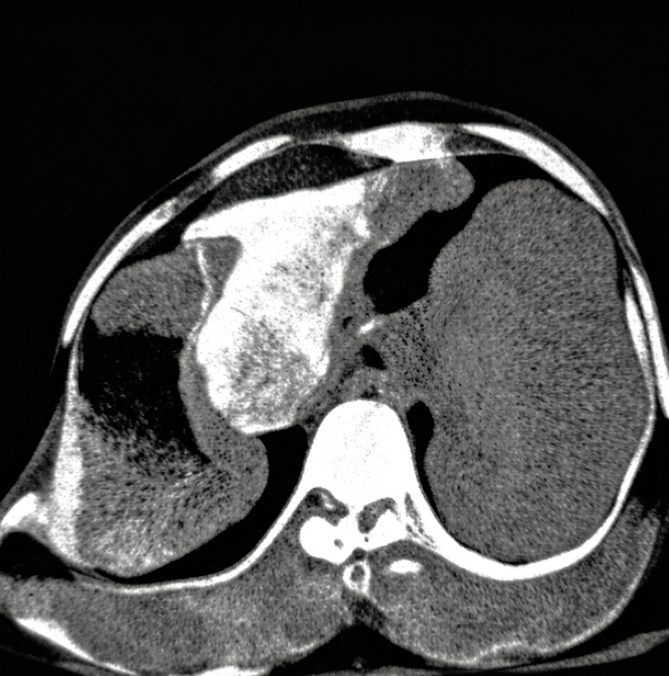

微分学研究函数的局部变化率.本章从导数概念与几何意义出发，建立一整套求导法则，讨论高阶导数、隐函数与参数方程求导，并引入微分及其在近似计算中的应用.
一辆自动驾驶汽车以 \(20\,\mathrm{m/s}\)（\(72\,\mathrm{km/h}\)）行驶，感知系统识别到前方障碍，AEB（自动紧急制动）系统介入.制动过程中，车辆位移（单位：米）随时间（单位：秒）的实测拟合式为
\[s(t)=20t-5t^{2}+0.5t^{3},\qquad 0\le t\le 3.\]控制器每 \(10\,\mathrm{ms}\) 刷新一次，它必须知道此时此刻的车速和减速度，而不是"过去 0.1 秒的平均值".问：\(t=1\,\mathrm{s}\) 时的车速是多少？
平均速度只能给出一个区间上的粗略值 \(\bar v=\dfrac{s(1+\Delta t)-s(1)}{\Delta t}\).把 \(\Delta t\) 一步步缩小：
| \(\Delta t\)（秒） | \(s(1+\Delta t)\)（米） | \(\Delta s=s(1+\Delta t)-s(1)\) | \(\bar v=\Delta s/\Delta t\)（\(\mathrm{m/s}\)） |
|---|---|---|---|
| 0.5 | 20.4375 | 4.9375 | 9.875 |
| 0.2 | 17.6640 | 2.1640 | 10.820 |
| 0.1 | 16.6155 | 1.1155 | 11.155 |
| 0.01 | 15.6147 | 0.1147 | 11.465 |
| 0.001 | 15.5115 | 0.0115 | 11.4965 |
（其中 \(s(1)=20-5+0.5=15.5\) 米.）数值明显趋向 \(11.5\,\mathrm{m/s}\).用极限精确刻画：
\[v(1)=\lim_{\Delta t\to0}\frac{s(1+\Delta t)-s(1)}{\Delta t}=\lim_{\Delta t\to0}\bigl(11.5-3.5\Delta t+0.5\Delta t^{2}\bigr)=11.5\ \mathrm{m/s}.\]再看减速度.由上式同理可得任意时刻速度 \(v(t)=20-10t+1.5t^{2}\).则 \(v(1)=11.5,\;v(1.1)=10.815\)，故 \([1,1.1]\) 上的平均减速度为
\[\bar a=\frac{10.815-11.5}{0.1}=-6.85\ \mathrm{m/s^{2}},\]而 \(t=1\) 时的瞬时减速度为
\[a(1)=\lim_{\Delta t\to0}\frac{v(1+\Delta t)-v(1)}{\Delta t}=\lim_{\Delta t\to0}\bigl(-7+1.5\Delta t\bigr)=-7.00\ \mathrm{m/s^{2}}.\]两者相差 \(0.15\,\mathrm{m/s^{2}}\)，相对偏差 \(2.1\%\).对以 \(100\,\mathrm{Hz}\) 闭环的制动控制器而言，这个偏差累积十几个周期就会造成数十厘米的刹停距离误差——工程上必须用"瞬时变化率"，这正是导数.
六轴工业机器人的某关节按余弦加减速规律转动，编码器读到的角度（弧度）为 \(\theta(t)=\dfrac{\pi}{4}\Bigl(1-\cos\dfrac{\pi t}{2}\Bigr),\;0\le t\le2\).求 \(t=1\,\mathrm{s}\) 时的角速度.
编码器只能给出离散采样，控制器用差商估计角速度：
| 采样间隔 \(\Delta t\)（秒） | \(\Delta\theta\)（弧度） | \(\Delta\theta/\Delta t\)（\(\mathrm{rad/s}\)） |
|---|---|---|
| 0.10 | 0.122856 | 1.22856 |
| 0.05 | 0.061623 | 1.23246 |
| 0.01 | 0.012337 | 1.23374 |
数值收敛到 \(1.2337\,\mathrm{rad/s}\).本章学完求导法则后可以直接算出精确值
\[\omega(1)=\theta'(1)=\frac{\pi}{4}\cdot\frac{\pi}{2}\sin\frac{\pi}{2}=\frac{\pi^{2}}{8}=1.233700\ \mathrm{rad/s}.\]可见"差分估计"是导数的数值近似，而导数是差分的极限.采样越密，估计越准，但噪声放大也越严重——这就是机器人测速中著名的"差分噪声"难题，其根源正在于导数的定义式里 \(\Delta t\) 在分母上.
上面两个引例的数学结构完全相同：都是函数增量与自变量增量之比，在自变量增量趋于零时的极限.把这个共同结构抽象出来，就得到导数.
设函数 \(y=f(x)\) 在点 \(x_{0}\) 的某个邻域内有定义.当自变量在 \(x_{0}\) 处取得增量 \(\Delta x\)（且 \(x_{0}+\Delta x\) 仍在该邻域内）时，函数取得相应增量
\[\Delta y=f(x_{0}+\Delta x)-f(x_{0}).\]若极限
\[\lim_{\Delta x\to0}\frac{\Delta y}{\Delta x}=\lim_{\Delta x\to0}\frac{f(x_{0}+\Delta x)-f(x_{0})}{\Delta x}\]存在，则称 \(f(x)\) 在点 \(x_{0}\) 处可导，并称此极限值为 \(f(x)\) 在 \(x_{0}\) 处的导数，记作
\[f'(x_{0}),\quad y'\Big|_{x=x_{0}},\quad \frac{\mathrm{d}y}{\mathrm{d}x}\Big|_{x=x_{0}},\quad \frac{\mathrm{d}f}{\mathrm{d}x}\Big|_{x=x_{0}}.\]若该极限不存在，则称 \(f(x)\) 在 \(x_{0}\) 处不可导.
如果 \(f(x)\) 在开区间 \(I\) 内每一点都可导，则称 \(f\) 在 \(I\) 内可导.此时对每个 \(x\in I\) 都对应一个导数值 \(f'(x)\)，于是得到一个新函数，称为 \(f(x)\) 的导函数，简称导数，记作 \(f'(x)\) 或 \(\dfrac{\mathrm{d}y}{\mathrm{d}x}\).显然 \(f'(x_{0})=f'(x)\big|_{x=x_{0}}\).
称
\[f'_{-}(x_{0})=\lim_{\Delta x\to0^{-}}\frac{f(x_{0}+\Delta x)-f(x_{0})}{\Delta x},\qquad f'_{+}(x_{0})=\lim_{\Delta x\to0^{+}}\frac{f(x_{0}+\Delta x)-f(x_{0})}{\Delta x}\]分别为 \(f(x)\) 在 \(x_{0}\) 处的左导数与右导数，统称单侧导数.
\(f(x)\) 在 \(x_{0}\) 处可导的充分必要条件是：左导数 \(f'_{-}(x_{0})\) 与右导数 \(f'_{+}(x_{0})\) 都存在且相等.此时 \(f'(x_{0})=f'_{-}(x_{0})=f'_{+}(x_{0})\).
这是第 2 章"极限存在 \(\Leftrightarrow\) 左右极限存在且相等"在差商上的直接应用.凡遇分段函数在分界点求导，必须用单侧导数.
按定义，\(f\) 在 \(x_0\) 可导即差商极限
\[f'(x_0)=\lim_{\Delta x\to0}\frac{f(x_0+\Delta x)-f(x_0)}{\Delta x}\]存在.把 \(\Delta x\to0\) 拆成 \(\Delta x\to0^{-}\) 与 \(\Delta x\to0^{+}\) 两个单侧过程，由函数极限存在的充要条件（定理 2.5），该双侧极限存在当且仅当左、右极限
\[f'_{-}(x_0)=\lim_{\Delta x\to0^{-}}\frac{f(x_0+\Delta x)-f(x_0)}{\Delta x},\qquad f'_{+}(x_0)=\lim_{\Delta x\to0^{+}}\frac{f(x_0+\Delta x)-f(x_0)}{\Delta x}\]都存在且相等.此时 \(f'(x_0)=f'_{-}(x_0)=f'_{+}(x_0)\).
证毕
几何意义.在曲线 \(y=f(x)\) 上取定点 \(M_{0}(x_{0},f(x_{0}))\) 与动点 \(M(x_{0}+\Delta x,\,f(x_{0}+\Delta x))\)，割线 \(M_{0}M\) 的斜率为
\[k_{\text{割}}=\frac{\Delta y}{\Delta x}=\tan\varphi.\]当 \(\Delta x\to0\) 时，\(M\) 沿曲线趋于 \(M_{0}\)，割线的极限位置就是曲线在 \(M_{0}\) 处的切线.因此
\[k_{\text{切}}=f'(x_{0})=\tan\alpha,\]即：导数 \(f'(x_{0})\) 就是曲线 \(y=f(x)\) 在点 \((x_{0},f(x_{0}))\) 处切线的斜率，\(\alpha\) 为切线倾角.
由此立即得到切线方程与法线方程：
\[\text{切线：}\;y-f(x_{0})=f'(x_{0})(x-x_{0});\qquad \text{法线：}\;y-f(x_{0})=-\frac{1}{f'(x_{0})}(x-x_{0})\;\bigl(f'(x_{0})\neq0\bigr).\]若 \(f'(x_{0})=0\)，切线水平 \(y=f(x_{0})\)，法线竖直 \(x=x_{0}\)；若差商极限为 \(\infty\)，则切线竖直 \(x=x_{0}\).
物理意义.设质点作直线运动，位移函数为 \(s=s(t)\)，则 \(s'(t_{0})=v(t_{0})\) 是 \(t_{0}\) 时刻的瞬时速度；速度函数 \(v=v(t)\) 的导数 \(v'(t_{0})=a(t_{0})\) 是瞬时加速度.更一般地：
| 原函数 | 导数的物理含义 | 典型工程场景 |
|---|---|---|
| 位移 \(s(t)\) | 速度 \(v=s'(t)\) | 自动驾驶纵向控制 |
| 速度 \(v(t)\) | 加速度 \(a=v'(t)\) | 惯性导航 IMU 解算 |
| 电荷量 \(q(t)\) | 电流 \(i=q'(t)\) | 动力电池充放电管理 |
| 转角 \(\theta(t)\) | 角速度 \(\omega=\theta'(t)\) | 机器人关节伺服 |
| 浓度 \(c(t)\) | 反应速率 \(c'(t)\) | 生物制药发酵过程 |
按定义求导分三步：求增量 \(\Delta y\) → 算比值 \(\dfrac{\Delta y}{\Delta x}\) → 取极限.
解由二项式定理
\[\Delta y=(x+\Delta x)^{n}-x^{n}=n x^{n-1}\Delta x+\frac{n(n-1)}{2}x^{n-2}(\Delta x)^{2}+\cdots+(\Delta x)^{n}.\]两边除以 \(\Delta x\)：
\[\frac{\Delta y}{\Delta x}=n x^{n-1}+\frac{n(n-1)}{2}x^{n-2}\Delta x+\cdots+(\Delta x)^{n-1}.\]令 \(\Delta x\to0\)，除首项外各项均含 \(\Delta x\) 因子而趋于零，故
\[(x^{n})'=n x^{n-1}.\]可以证明，对任意实数 \(\mu\) 都有 \((x^{\mu})'=\mu x^{\mu-1}\)（第 3.2 节用对数求导法给出一般证明）.特别地 \((\sqrt{x})'=\dfrac{1}{2\sqrt{x}}\)，\(\Bigl(\dfrac1x\Bigr)'=-\dfrac{1}{x^{2}}\)，\((C)'=0\).
解用和差化积公式：
\[\Delta y=\sin(x+\Delta x)-\sin x=2\cos\Bigl(x+\frac{\Delta x}{2}\Bigr)\sin\frac{\Delta x}{2}.\]于是
\[\frac{\Delta y}{\Delta x}=\cos\Bigl(x+\frac{\Delta x}{2}\Bigr)\cdot\frac{\sin\dfrac{\Delta x}{2}}{\dfrac{\Delta x}{2}}.\]令 \(\Delta x\to0\)，第一个因子由 \(\cos\) 的连续性趋于 \(\cos x\)，第二个因子由重要极限趋于 \(1\)，故
\[(\sin x)'=\cos x.\]同法可得 \((\cos x)'=-\sin x\).
解（1）\(\Delta y=a^{x+\Delta x}-a^{x}=a^{x}\bigl(a^{\Delta x}-1\bigr)\).利用等价无穷小 \(a^{\Delta x}-1\sim\Delta x\ln a\;(\Delta x\to0)\)：
\[\lim_{\Delta x\to0}\frac{\Delta y}{\Delta x}=a^{x}\lim_{\Delta x\to0}\frac{a^{\Delta x}-1}{\Delta x}=a^{x}\ln a,\]即 \((a^{x})'=a^{x}\ln a\).特别地 \((\mathrm{e}^{x})'=\mathrm{e}^{x}\)——指数函数 \(\mathrm{e}^{x}\) 的导数就是它自己，这是它在自然科学中无处不在的根本原因.
（2）\(\Delta y=\log_{a}(x+\Delta x)-\log_{a}x=\log_{a}\Bigl(1+\dfrac{\Delta x}{x}\Bigr)\).利用 \(\ln(1+u)\sim u\)：
\[\frac{\Delta y}{\Delta x}=\frac{1}{\ln a}\cdot\frac{\ln\Bigl(1+\dfrac{\Delta x}{x}\Bigr)}{\Delta x} \;\xrightarrow{\;\Delta x\to0\;}\;\frac{1}{\ln a}\cdot\frac{1}{x},\]即 \((\log_{a}x)'=\dfrac{1}{x\ln a}\)，特别地 \((\ln x)'=\dfrac1x\).
若 \(f(x)\) 在点 \(x_{0}\) 处可导，则 \(f(x)\) 在 \(x_{0}\) 处必连续.
证由可导性，\(\lim\limits_{\Delta x\to0}\dfrac{\Delta y}{\Delta x}=f'(x_{0})\) 存在.于是
\[\lim_{\Delta x\to0}\Delta y=\lim_{\Delta x\to0}\Bigl(\frac{\Delta y}{\Delta x}\cdot\Delta x\Bigr) =f'(x_{0})\cdot0=0,\]即 \(\lim\limits_{\Delta x\to0}f(x_{0}+\Delta x)=f(x_{0})\)，故 \(f\) 在 \(x_{0}\) 连续.
设 \(f\) 在 \(x_0\) 可导，即 \(\lim\limits_{\Delta x\to0}\dfrac{\Delta y}{\Delta x}=f'(x_0)\) 存在，其中 \(\Delta y=f(x_0+\Delta x)-f(x_0)\).于是
\[\lim_{\Delta x\to0}\Delta y =\lim_{\Delta x\to0}\left(\frac{\Delta y}{\Delta x}\cdot\Delta x\right) =\lim_{\Delta x\to0}\frac{\Delta y}{\Delta x}\cdot\lim_{\Delta x\to0}\Delta x =f'(x_0)\cdot0=0.\]即 \(\lim\limits_{\Delta x\to0}[f(x_0+\Delta x)-f(x_0)]=0\)，亦即 \(\lim\limits_{\Delta x\to0}f(x_0+\Delta x)=f(x_0)\).故 \(f\) 在 \(x_0\) 处连续.
证毕
讨论 \(f(x)=|x|\) 与 \(g(x)=\sqrt[3]{x}\) 在 \(x=0\) 处的可导性.
解（1）\(f(x)=|x|\) 在 \(x=0\) 显然连续（\(f(0)=0\)，左右极限都为 \(0\)）.计算单侧导数：
\[f'_{-}(0)=\lim_{\Delta x\to0^{-}}\frac{|\Delta x|-0}{\Delta x}=\lim_{\Delta x\to0^{-}}\frac{-\Delta x}{\Delta x}=-1,\qquad f'_{+}(0)=\lim_{\Delta x\to0^{+}}\frac{\Delta x}{\Delta x}=1.\]因 \(f'_{-}(0)=-1\neq1=f'_{+}(0)\)，由定理 3.1 知 \(f\) 在 \(0\) 处不可导.几何上，图像在原点形成一个尖点（角点），左右切线方向不一致.
（2）\(g(x)=\sqrt[3]{x}=x^{1/3}\) 在 \(x=0\) 连续.计算差商：
\[\lim_{\Delta x\to0}\frac{\sqrt[3]{\Delta x}-0}{\Delta x}=\lim_{\Delta x\to0}\frac{1}{(\Delta x)^{2/3}}=+\infty.\]极限为无穷，故 \(g\) 在 \(0\) 处不可导.但此时曲线在原点有切线，是竖直切线 \(x=0\)（倾角 \(\alpha=\dfrac{\pi}{2}\)，斜率不存在）.
对比记忆：\(|x|\) 是"有两条切线"，\(\sqrt[3]{x}\) 是"切线竖着立起来".两者都连续，都不可导，但原因不同.
设 \(f(x)=\begin{cases}x^{2},&x\le1,\\ ax+b,&x\gt1,\end{cases}\) 问 \(a,b\) 取何值时 \(f(x)\) 在 \(x=1\) 处可导？
解第一步：先用连续性定条件（可导必连续）.
\[\lim_{x\to1^{-}}f(x)=1,\qquad \lim_{x\to1^{+}}f(x)=a+b,\qquad f(1)=1.\]连续要求 \(a+b=1\).
第二步：再用左右导数相等.注意 \(f(1)=1\)，
\[f'_{-}(1)=\lim_{x\to1^{-}}\frac{x^{2}-1}{x-1}=\lim_{x\to1^{-}}(x+1)=2,\] \[f'_{+}(1)=\lim_{x\to1^{+}}\frac{(ax+b)-1}{x-1}=\lim_{x\to1^{+}}\frac{a(x-1)+(a+b-1)}{x-1}=a\quad(\text{已用 }a+b=1).\]令 \(f'_{-}(1)=f'_{+}(1)\) 得 \(a=2\)，代回 \(a+b=1\) 得 \(b=-1\).
故 \(\boxed{a=2,\;b=-1}\)，此时 \(f'(1)=2\).
易错提醒：不能上来就对两段分别求导再令 \(2x\big|_{x=1}=a\).那样做只是形式上凑答案，一旦连续性不满足（如 \(b\) 取错），左右导数根本无从谈起.先连续、后可导，顺序不能颠倒.
设 \(f(x)\) 在 \(x_{0}\) 处可导，求 \(\displaystyle\lim_{h\to0}\frac{f(x_{0}+2h)-f(x_{0}-3h)}{h}\).
解关键技巧：凑出定义式，分子分母的增量必须配套.作"加一项减一项"：
\[\frac{f(x_{0}+2h)-f(x_{0}-3h)}{h} =\frac{\bigl[f(x_{0}+2h)-f(x_{0})\bigr]-\bigl[f(x_{0}-3h)-f(x_{0})\bigr]}{h}.\]对第一项配 \(2h\)，第二项配 \(-3h\)：
\[=2\cdot\frac{f(x_{0}+2h)-f(x_{0})}{2h}+3\cdot\frac{f(x_{0}-3h)-f(x_{0})}{-3h}.\]令 \(h\to0\)，两个差商分别趋于 \(f'(x_{0})\)，故原极限 \(=2f'(x_{0})+3f'(x_{0})=5f'(x_{0})\).
速算口诀：\(\dfrac{f(x_0+\alpha h)-f(x_0+\beta h)}{h}\to(\alpha-\beta)f'(x_0)\).本题 \(\alpha=2,\beta=-3\)，答案 \(5f'(x_0)\).
设 \(f(x)=\begin{cases}x^{2}\sin\dfrac1x,&x\neq0,\\ 0,&x=0.\end{cases}\) 证明 \(f\) 在 \(x=0\) 可导，但 \(f'(x)\) 在 \(x=0\) 不连续.
证按定义
\[f'(0)=\lim_{\Delta x\to0}\frac{(\Delta x)^{2}\sin\dfrac{1}{\Delta x}-0}{\Delta x} =\lim_{\Delta x\to0}\Delta x\sin\frac{1}{\Delta x}=0,\]这里用了"无穷小乘有界量仍是无穷小".故 \(f'(0)=0\)，可导.
当 \(x\neq0\) 时（用第 3.2 节法则）\(f'(x)=2x\sin\dfrac1x-\cos\dfrac1x\).当 \(x\to0\) 时，\(2x\sin\dfrac1x\to0\)，而 \(\cos\dfrac1x\) 在 \([-1,1]\) 内无限振荡，极限不存在.故 \(\lim\limits_{x\to0}f'(x)\) 不存在，\(f'\) 在 \(0\) 处不连续.
这说明：可导 \(\Rightarrow\) 连续，但"可导"并不能保证"导函数连续".导函数连续的函数称为连续可微函数（记作 \(C^{1}\) 类），这是比可导更强的条件，在数值优化与轨迹规划中被反复要求.
车辆参考路径为 \(y=\dfrac{1}{20}x^{2}\)（单位：米）.求车辆行至 \(x=10\) 处时的切线（即瞬时航向）方程与法线（即横向偏差方向）方程，并求航向角.
解先求切点：\(y(10)=\dfrac{100}{20}=5\)，切点为 \((10,5)\).
由例 3.1，\(y'=\dfrac{1}{20}\cdot2x=\dfrac{x}{10}\)，故 \(k=y'(10)=1\).
切线方程：\(y-5=1\cdot(x-10)\)，即 \(x-y-5=0\).
法线方程：\(y-5=-1\cdot(x-10)\)，即 \(x+y-15=0\).
航向角 \(\alpha=\arctan1=45^{\circ}\).也就是说，此刻车头指向与 \(x\) 轴成 \(45^{\circ}\).横向控制算法（如纯跟踪 Pure Pursuit）正是不断计算这个 \(\arctan f'(x)\) 来给出方向盘转角指令的.
场景： 一辆开启 AEB（自动紧急制动）的轿车以 72 km/h 在城市快速路巡航.前方 40 米处，一辆突然加塞的自行车让毫米波雷达在一瞬间锁定了目标——接下来的 0.25 秒里，系统要完成"看到—判断—建压"，之后才是真正的刹车.问题很实在：这 40 米，够不够把车停住？这不是"感觉"，而是一个能被导数一路算到底的确定数.下面把这段距离拆成三段，一段一段算给你看.
第一段：感知与决策延迟.激光雷达识别 \(t_{1}=0.05\,\mathrm{s}\)，融合判决 \(t_{2}=0.08\,\mathrm{s}\)，液压建压 \(t_{3}=0.12\,\mathrm{s}\)，合计延迟 \(t_{d}=0.25\,\mathrm{s}\).此阶段车速仍为 \(v_{0}=20\,\mathrm{m/s}\)，走过
\[d_{1}=v_{0}t_{d}=20\times0.25=5.0\ \mathrm{m}.\]第二段：制动力建立段（非匀减速）.取引例的模型 \(v(t)=20-10t+1.5t^{2}\)，其导数给出瞬时减速度 \(a(t)=v'(t)=-10+3t\).列表看它如何变化：
| \(t\)（秒） | \(v(t)\)（\(\mathrm{m/s}\)） | \(a(t)=v'(t)\)（\(\mathrm{m/s^{2}}\)） | 相当于 |
|---|---|---|---|
| 0.0 | 20.00 | \(-10.00\) | \(1.02\,g\) |
| 0.5 | 15.38 | \(-8.50\) | \(0.87\,g\) |
| 1.0 | 11.50 | \(-7.00\) | \(0.71\,g\) |
| 1.5 | 8.38 | \(-5.50\) | \(0.56\,g\) |
| 2.0 | 6.00 | \(-4.00\) | \(0.41\,g\) |
（取 \(g=9.8\,\mathrm{m/s^{2}}\).）可见减速度并非常数——轮胎附着力随载荷转移、ABS 介入而变化.如果控制器错误地按"平均减速度 \(7\,\mathrm{m/s^{2}}\) 恒定"估算，就会低估前期制动能力、高估后期制动能力.
第三段：刹停时刻.令 \(v(t)=0\)：
\[1.5t^{2}-10t+20=0\;\Longrightarrow\;\Delta=100-120=-20\lt0,\]无实根！这说明该二次模型在整个区间内速度不会降到零——因为 \(v\) 的最小值在 \(t=\dfrac{10}{3}\) 处为 \(20-\dfrac{100}{3}+1.5\cdot\dfrac{100}{9}=3.33\,\mathrm{m/s}\).
工程结论：该拟合模型只在 \(t\le2\,\mathrm{s}\) 有效，之后必须切换到"ABS 全力制动"模型 \(a=-8.5\,\mathrm{m/s^{2}}\) 恒定.从 \(t=2\,\mathrm{s}\)（\(v=6\,\mathrm{m/s}\)）到停止还需 \(\dfrac{6}{8.5}=0.706\,\mathrm{s}\)，再走 \(\dfrac{6^{2}}{2\times8.5}=2.12\,\mathrm{m}\).
这条链上每一段都可以再优化，唯独那 20% 的冗余不能省——把 31.1 米报成 37.3 米，多出的 6 米不是保守，而是把模型失效（\(t\gt2\,\mathrm{s}\) 二次式已经不成立）、路面湿滑、乘员反应一并算了进去.车规级安全从来不是"平均情况下能刹住"，而是"最坏情况下也刹得住".
三段合计（第二段位移 \(s(2)-s(0)=40-20+4=24\,\mathrm{m}\)）：
\[D=d_{1}+24+2.12=5.0+24+2.12=31.12\ \mathrm{m}.\]所以：72 km/h 下，本车总刹停距离约 31.1 米.法规要求预留 \(20\%\) 安全冗余，故 AEB 的触发阈值应设为 \(31.12\times1.2\approx37.3\) 米.
整条链上，"减速度"这个最核心的量，从头到尾都是速度函数的导数.没有导数，就没有一个数能被算出来.
场景： 凌晨两点，急诊 CT 室的门被推开.一位突发偏瘫的患者送进机房，距离发病已经过去 3 小时 40 分钟——留给溶栓的时间窗只剩不到 90 分钟.碘造影剂团注下去，机器逐秒扫描，屏幕上每个体素都长出一条时间-密度曲线 \(C(t)\)（单位 HU）.医生真正要读的不是曲线本身，而是它爬升得有多陡：临床上正是用最大斜率法把这个陡度换算成脑血流量
\[\mathrm{CBF}=\frac{\bigl(\mathrm{d}C/\mathrm{d}t\bigr)_{\max}}{C_{a,\max}}\times 6000 \quad\bigl[\mathrm{mL/(min\cdot 100g)}\bigr],\]其中 \(C_{a,\max}\) 是动脉输入函数峰值.可见诊断结论直接建立在一个导数值上.
| 参数 | 符号 | 取值 |
|---|---|---|
| 组织 TDC 上升段拟合式 | \(C(t)\) | \(-0.15t^{2}+3.6t-1.2\ \mathrm{HU}\) |
| 动脉峰值密度 | \(C_{a,\max}\) | 350 HU |
| 扫描采样间隔 | \(\Delta t\) | 1.0 s |
在 \(t=2\ \mathrm{s}\) 处按定义做差商，\(C(2)=5.400\)：
| \(\Delta t\)（s） | 0.5 | 0.2 | 0.1 | 0.01 |
|---|---|---|---|---|
| \(C(2+\Delta t)\) | 6.8625 | 5.9940 | 5.6985 | 5.429985 |
| 差商（HU/s） | 2.925 | 2.970 | 2.985 | 2.9985 |
数值趋于极限 \(C'(2)=-0.3\times2+3.6=3.000\ \mathrm{HU/s}\)，于是
\[\mathrm{CBF}=\frac{3.000}{350}\times6000=51.43\ \mathrm{mL/(min\cdot 100g)}.\]但机器只能按 \(\Delta t=1.0\ \mathrm{s}\) 采样，实际读到的是差商 \(\dfrac{C(3)-C(2)}{1}=\dfrac{8.25-5.40}{1}=2.85\).差值恰为
\[\bar v-C'(2)=\frac{C''}{2}\Delta t=\frac{-0.3}{2}\times1.0=-0.15\ \mathrm{HU/s},\]相对偏差 \(5.0\%\)，据此算出的 \(\mathrm{CBF}=48.86\)，系统性偏低.
工程结论： 梗死核心的判读阈值约为 \(20\ \mathrm{mL/(min\cdot 100g)}\).真值 \(21.0\) 的半暗带体素被低估 \(5\%\) 后读成 \(19.95\)，就会被误标成"不可挽救的核心"，直接影响是否溶栓取栓.由于误差正比于 \(\Delta t\)，把采样间隔从 \(1.0\ \mathrm{s}\) 加密到 \(0.5\ \mathrm{s}\) 即可把偏差压到 \(2.5\%\)；更彻底的办法是先做曲线拟合再求解析导数——这就是所有商用 CTP 后处理软件都要"先拟合、后求导"的原因.
一个 \(5\%\) 的差商偏差，落到病床上就是"救"与"不救"的分界.国产 CTP 后处理软件这些年能进三甲医院急诊，靠的正是把采样间隔、拟合模型、解析求导这些不起眼的环节逐项抠住——医疗软件的可靠性，最终就体现在"用差商还是用导数"这样朴素的取舍里.
场景： 训练跑到第 200 步，loss 一直掉得很顺，忽然某一步梯度打印出 NaN.你把代码翻了个遍，最后发现问题出在一个从没怀疑过的地方——全世界深度学习框架每天要调用上万亿次的 \(\mathrm{ReLU}(x)=\max(0,x)\)，恰恰在 \(x=0\) 这一个点上没有导数.它连续，却不可导.按定义 3.2 把左右导数算出来，就一清二楚了：
\[f'_{-}(0)=\lim_{\Delta x\to0^{-}}\frac{0-0}{\Delta x}=0,\qquad f'_{+}(0)=\lim_{\Delta x\to0^{+}}\frac{\Delta x-0}{\Delta x}=1.\]若要一个处处可导的替身，可用 Softplus \(s_{\beta}(x)=\dfrac{1}{\beta}\ln\bigl(1+\mathrm{e}^{\beta x}\bigr)\)，其导数为 Sigmoid \(\sigma(\beta x)\)，在 \(x=0\) 处等于 \(0.5\)（恰是左右导数 \(0\) 与 \(1\) 的平均）.逼近误差的最大值出现在原点，为 \(\dfrac{\ln 2}{\beta}\).
| \(\beta\) | 1 | 5 | 10 | 20 | 100 |
|---|---|---|---|---|---|
| 最大偏差 \(\ln2/\beta\) | 0.6931 | 0.1386 | 0.0693 | 0.0347 | 0.0069 |
| 原点处导数 | 0.5 | 0.5 | 0.5 | 0.5 | 0.5 |
取 \(\beta=20\)：偏差 \(0.0347\)，相对于典型激活幅值 \(1.0\) 仅 \(3.5\%\)，而函数处处可导、导函数还连续（属 \(C^{1}\) 类）.代价是每次前向要算一次 \(\exp\) 与 \(\ln\)，约合 ReLU 的 20 倍时钟周期.
网络结构（每层 1 个神经元，隐层用 Sigmoid \(\sigma(z)=\dfrac{1}{1+\mathrm{e}^{-z}}\)，输出层为线性）：
\[z_{1}=w_{1}x+b_{1},\quad a_{1}=\sigma(z_{1});\qquad z_{2}=w_{2}a_{1}+b_{2},\quad a_{2}=\sigma(z_{2});\] \[z_{3}=w_{3}a_{2}+b_{3},\quad \hat y=z_{3};\qquad L=\tfrac12(\hat y-y)^{2}.\]给定参数与样本：\(x=1.0,\;y=1.0\)；\(w_{1}=0.8,\;b_{1}=0.2\)；\(w_{2}=1.5,\;b_{2}=-0.4\)；\(w_{3}=2.0,\;b_{3}=0.1\).
（一）前向传播（Forward）
\[z_{1}=0.8\times1.0+0.2=1.0,\qquad a_{1}=\sigma(1.0)=\frac{1}{1+0.367879}=0.731059;\] \[z_{2}=1.5\times0.731059-0.4=1.096588-0.4=0.696588,\qquad a_{2}=\sigma(0.696588)=0.667430;\] \[z_{3}=2.0\times0.667430+0.1=1.434860=\hat y,\qquad L=\tfrac12(1.434860-1.0)^{2}=\tfrac12(0.434860)^{2}=0.094551.\]（二）反向传播：把 \(L\) 看成 \(w\) 的复合函数
以最内层权重 \(w_{1}\) 为例，它经过了整整六层复合：
\[w_{1}\;\longrightarrow\;z_{1}\;\longrightarrow\;a_{1}\;\longrightarrow\;z_{2}\;\longrightarrow\;a_{2}\;\longrightarrow\;z_{3}\;\longrightarrow\;L.\]链式法则说：复合函数的导数等于各层导数之积.
\[\frac{\partial L}{\partial w_{1}} =\frac{\mathrm{d}L}{\mathrm{d}z_{3}}\cdot\frac{\mathrm{d}z_{3}}{\mathrm{d}a_{2}} \cdot\frac{\mathrm{d}a_{2}}{\mathrm{d}z_{2}}\cdot\frac{\mathrm{d}z_{2}}{\mathrm{d}a_{1}} \cdot\frac{\mathrm{d}a_{1}}{\mathrm{d}z_{1}}\cdot\frac{\mathrm{d}z_{1}}{\mathrm{d}w_{1}}.\]逐个因子求值（用到 \(\sigma'(z)=\sigma(z)\bigl(1-\sigma(z)\bigr)=a(1-a)\)）：
\[\frac{\mathrm{d}L}{\mathrm{d}z_{3}}=\hat y-y=0.434860;\qquad \frac{\mathrm{d}z_{3}}{\mathrm{d}a_{2}}=w_{3}=2.0;\] \[\frac{\mathrm{d}a_{2}}{\mathrm{d}z_{2}}=a_{2}(1-a_{2})=0.667430\times0.332570=0.221968;\qquad \frac{\mathrm{d}z_{2}}{\mathrm{d}a_{1}}=w_{2}=1.5;\] \[\frac{\mathrm{d}a_{1}}{\mathrm{d}z_{1}}=a_{1}(1-a_{1})=0.731059\times0.268941=0.196612;\qquad \frac{\mathrm{d}z_{1}}{\mathrm{d}w_{1}}=x=1.0.\]连乘：
\[\frac{\partial L}{\partial w_{1}} =0.434860\times2.0\times0.221968\times1.5\times0.196612\times1.0=0.056934.\]| \(w_{3}\) | \(\delta_{3}\cdot a_{2}\) | \(0.434860\times0.667430\) | \(0.290239\) |
| \(b_{3}\) | \(\delta_{3}\cdot1\) | \(0.434860\) | \(0.434860\) |
| \(w_{2}\) | \(\delta_{2}\cdot a_{1}\) | \(0.193050\times0.731059\) | \(0.141131\) |
| \(b_{2}\) | \(\delta_{2}\cdot1\) | \(0.193050\) | \(0.193050\) |
| \(w_{1}\) | \(\delta_{1}\cdot x\) | \(0.056934\times1.0\) | \(0.056934\) |
| \(b_{1}\) | \(\delta_{1}\cdot1\) | \(0.056934\) | \(0.056934\) |
其中 \(\delta_{3}=\hat y-y=0.434860\)，\(\delta_{2}=\delta_{3}w_{3}\,a_{2}(1-a_{2})=0.434860\times2.0\times0.221968=0.193050\)，\(\delta_{1}=\delta_{2}w_{2}\,a_{1}(1-a_{1})=0.193050\times1.5\times0.196612=0.056934\).这个"\(\delta\) 从后往前递推"的写法，就是反向传播算法本身.
（三）更新一步，看损失是否真的下降（学习率 \(\eta=0.5\)，\(w\leftarrow w-\eta\,\partial L/\partial w\)）：
\[w_{1}=0.771533,\;b_{1}=0.171533;\quad w_{2}=1.429435,\;b_{2}=-0.496525;\quad w_{3}=1.854881,\;b_{3}=-0.117430.\]重新前向：\(z_{1}=0.943066,\;a_{1}=0.719719\)；\(z_{2}=0.532267,\;a_{2}=0.630012\)；\(\hat y=z_{3}=1.051167\).新损失
\[L_{\text{新}}=\tfrac12(1.051167-1)^{2}=0.001309.\]损失从 \(0.094551\) 降到 \(0.001309\)，一步就降了 98.6%.今天所有大模型的训练，无论参数量是一亿还是一万亿，每一步做的事情就是把上面这套链式法则重复几十亿次.链式法则不是一条抽象定理，它是整个人工智能产业的计算内核.
某电动车动力电池在快充阶段，端电压与电流随时间变化（\(t\) 单位：秒）：\(U(t)=400-0.5t\ \mathrm{V}\)，\(I(t)=100+2t\ \mathrm{A}\).BMS（电池管理系统）需要监控充电功率 \(P=UI\) 的变化率，以防功率突变损伤电芯.求 \(t=10\,\mathrm{s}\) 时的 \(P'(t)\).
解\(P\) 是两个函数的乘积，不能用"分别求导再相乘"（那会得到 \(-0.5\times2=-1\)，完全错误）.正确的是乘积法则 \((UI)'=U'I+UI'\)：
\[U(10)=395\ \mathrm{V},\quad I(10)=120\ \mathrm{A},\quad U'=-0.5,\quad I'=2.\] \[P'(10)=(-0.5)\times120+395\times2=-60+790=730\ \mathrm{W/s}.\]而此刻功率 \(P(10)=395\times120=47400\,\mathrm{W}=47.4\,\mathrm{kW}\).
结论：功率正以每秒 \(730\,\mathrm{W}\) 的速度上升，约合每秒增长 \(1.54\%\).若 BMS 设定的功率爬升上限是 \(1000\,\mathrm{W/s}\)，则当前工况安全.请注意 \(-60\) 与 \(+790\) 这两项的物理含义：前者是"电压下降拖累功率"，后者是"电流上升拉升功率".乘积法则的两项，恰恰对应两个物理因素的独立贡献——这就是它的深刻之处.
设 \(u=u(x),\;v=v(x)\) 都在点 \(x\) 处可导，则
\[(1)\;\;(u\pm v)'=u'\pm v';\qquad (2)\;\;(uv)'=u'v+uv';\] \[(3)\;\;(Cu)'=Cu'\;(C\text{ 为常数});\qquad (4)\;\;\Bigl(\frac{u}{v}\Bigr)'=\frac{u'v-uv'}{v^{2}}\;\bigl(v(x)\neq0\bigr).\]以下均在某点 \(x\) 处，\(u=u(x),v=v(x)\) 可导.记 \(u'=u'(x),v'=v'(x)\).
① 和差：由导数定义
\[(u\pm v)'=\lim_{h\to0}\frac{[u(x+h)\pm v(x+h)]-[u(x)\pm v(x)]}{h} =\lim_{h\to0}\frac{u(x+h)-u(x)}{h}\pm\lim_{h\to0}\frac{v(x+h)-v(x)}{h}=u'\pm v'.\]② 乘积：
\[(uv)'=\lim_{h\to0}\frac{u(x+h)v(x+h)-u(x)v(x)}{h}.\]加一项减一项：
\[\frac{u(x+h)v(x+h)-u(x)v(x)}{h} =\frac{u(x+h)[v(x+h)-v(x)]+v(x)[u(x+h)-u(x)]}{h} =u(x+h)\frac{\Delta v}{h}+v(x)\frac{\Delta u}{h}.\]令 \(h\to0\)，因 \(u\) 可导必连续（定理 3.2），\(u(x+h)\to u(x)\)，而 \(\dfrac{\Delta v}{h}\to v'\)、\(\dfrac{\Delta u}{h}\to u'\)，故
\[(uv)'=u v'+v u'.\]取 \(v\equiv C\) 得 \((Cu)'=Cu'\).
④ 商（\(v\neq0\)）：
\[\left(\frac{u}{v}\right)'=\lim_{h\to0}\frac{\dfrac{u(x+h)}{v(x+h)}-\dfrac{u(x)}{v(x)}}{h} =\lim_{h\to0}\frac{u(x+h)v(x)-u(x)v(x+h)}{v(x+h)v(x)\,h}.\]分子 \(=v(x)[u(x+h)-u(x)]-u(x)[v(x+h)-v(x)]\)，除以 \(h\) 后取极限得
\[\left(\frac{u}{v}\right)'=\frac{v u'-u v'}{v^2}.\]证毕
乘积法则.记 \(y=uv\)，则
\[\Delta y=u(x+\Delta x)v(x+\Delta x)-u(x)v(x).\]关键一步是"加一项减一项"，把混合增量拆成两个单独的增量：
\[\Delta y=\bigl[u(x+\Delta x)-u(x)\bigr]v(x+\Delta x)+u(x)\bigl[v(x+\Delta x)-v(x)\bigr] =\Delta u\cdot v(x+\Delta x)+u(x)\cdot\Delta v.\]除以 \(\Delta x\) 并令 \(\Delta x\to0\).由 \(v\) 可导必连续知 \(v(x+\Delta x)\to v(x)\)，故
\[(uv)'=u'v+uv'.\]几何直观：把 \(uv\) 看成矩形面积，边长各增加 \(\Delta u,\Delta v\)，面积增量 \(=v\Delta u+u\Delta v+\Delta u\Delta v\).前两项是"两条长条"，末项是"小角块"，是 \(\Delta x\) 的高阶无穷小，取极限时消失.这就是 \((uv)'\) 有两项而不是一项的原因.
商法则.先证 \(\Bigl(\dfrac1v\Bigr)'\)：
\[\frac{\Delta\bigl(\frac1v\bigr)}{\Delta x}=\frac{1}{\Delta x}\Bigl[\frac{1}{v(x+\Delta x)}-\frac{1}{v(x)}\Bigr] =-\frac{1}{v(x+\Delta x)v(x)}\cdot\frac{\Delta v}{\Delta x}\;\longrightarrow\;-\frac{v'}{v^{2}}.\]再由乘积法则 \(\Bigl(\dfrac{u}{v}\Bigr)'=\Bigl(u\cdot\dfrac1v\Bigr)'=u'\cdot\dfrac1v+u\cdot\Bigl(-\dfrac{v'}{v^{2}}\Bigr)=\dfrac{u'v-uv'}{v^{2}}\).
推广：三因子乘积 \((uvw)'=u'vw+uv'w+uvw'\)——"每次只对一个因子求导，其余照抄，再全部相加".这条规律在 \(n\) 个因子时同样成立，也是对数求导法的雏形.
求下列函数的导数：(1) \(y=3x^{4}-\dfrac{2}{x}+5\sqrt{x}-7\)；(2) \(y=x^{2}\mathrm{e}^{x}\ln x\).
解(1) 先把各项写成幂函数标准形式 \(y=3x^{4}-2x^{-1}+5x^{1/2}-7\)，逐项求导：
\[y'=12x^{3}+2x^{-2}+\frac52x^{-1/2}=12x^{3}+\frac{2}{x^{2}}+\frac{5}{2\sqrt{x}}.\](2) 三因子乘积，用推广的乘积法则：
\[y'=(x^{2})'\mathrm{e}^{x}\ln x+x^{2}(\mathrm{e}^{x})'\ln x+x^{2}\mathrm{e}^{x}(\ln x)' =2x\mathrm{e}^{x}\ln x+x^{2}\mathrm{e}^{x}\ln x+x\mathrm{e}^{x}.\]整理得 \(y'=x\mathrm{e}^{x}\bigl[(x+2)\ln x+1\bigr]\).
解\(\tan x=\dfrac{\sin x}{\cos x}\)，由商法则
\[(\tan x)'=\frac{(\sin x)'\cos x-\sin x(\cos x)'}{\cos^{2}x} =\frac{\cos^{2}x+\sin^{2}x}{\cos^{2}x}=\frac{1}{\cos^{2}x}=\sec^{2}x.\]\(\sec x=\dfrac{1}{\cos x}\)，同理
\[(\sec x)'=\frac{0\cdot\cos x-1\cdot(-\sin x)}{\cos^{2}x}=\frac{\sin x}{\cos^{2}x}=\sec x\tan x.\]类似可得 \((\cot x)'=-\csc^{2}x\)，\((\csc x)'=-\csc x\cot x\).
设 \(x=\varphi(y)\) 在区间 \(I_{y}\) 内单调、可导，且 \(\varphi'(y)\neq0\)，则它的反函数 \(y=f(x)\) 在对应区间 \(I_{x}\) 内可导，且
\[f'(x)=\frac{1}{\varphi'(y)},\qquad\text{即}\qquad \frac{\mathrm{d}y}{\mathrm{d}x}=\frac{1}{\dfrac{\mathrm{d}x}{\mathrm{d}y}}.\]证明要点：由单调性，\(\Delta x\neq0\Leftrightarrow\Delta y\neq0\)，且 \(\Delta x\to0\Leftrightarrow\Delta y\to0\)（连续性）.于是 \(\dfrac{\Delta y}{\Delta x}=\dfrac{1}{\Delta x/\Delta y}\)，两边取极限即得.
设 \(x=\varphi(y)\) 在 \(I_y\) 内单调、可导且 \(\varphi'(y)\neq0\)，其反函数为 \(y=f(x)\).
思路：因为 \(\varphi\) 可导必连续（定理 3.2），所以当自变量 \(y\) 变动趋于 \(y_0\) 时，对应的 \(x=\varphi(y)\) 也趋于 \(x_0\)，且 \(\Delta x\neq0\Leftrightarrow\Delta y\neq0\).
证明：由差分关系
\[\frac{\Delta y}{\Delta x}=\frac{1}{\dfrac{\Delta x}{\Delta y}} =\frac{1}{\dfrac{\varphi(y+\Delta y)-\varphi(y)}{\Delta y}}.\]令 \(\Delta y\to0\)，则 \(\Delta x\to0\)（连续性），且 \(\dfrac{\Delta x}{\Delta y}\to\varphi'(y)\neq0\).于是
\[f'(x)=\lim_{\Delta x\to0}\frac{\Delta y}{\Delta x} =\frac{1}{\lim_{\Delta y\to0}\dfrac{\Delta x}{\Delta y}} =\frac{1}{\varphi'(y)},\]即 \(\dfrac{\mathrm{d}y}{\mathrm{d}x}=\dfrac{1}{\dfrac{\mathrm{d}x}{\mathrm{d}y}}\).
证毕
解（1）\(y=\arcsin x,\;x\in(-1,1)\).其反函数是 \(x=\sin y,\;y\in\bigl(-\frac{\pi}{2},\frac{\pi}{2}\bigr)\)，在该区间上 \(\dfrac{\mathrm{d}x}{\mathrm{d}y}=\cos y\gt0\).故
\[(\arcsin x)'=\frac{1}{\cos y}=\frac{1}{\sqrt{1-\sin^{2}y}}=\frac{1}{\sqrt{1-x^{2}}}.\]（这里取正根，因为 \(y\in\bigl(-\frac{\pi}{2},\frac{\pi}{2}\bigr)\) 时 \(\cos y\gt0\).）
（2）\(y=\arctan x,\;x\in\mathbb{R}\).反函数 \(x=\tan y,\;y\in\bigl(-\frac{\pi}{2},\frac{\pi}{2}\bigr)\)，\(\dfrac{\mathrm{d}x}{\mathrm{d}y}=\sec^{2}y=1+\tan^{2}y=1+x^{2}\).故
\[(\arctan x)'=\frac{1}{1+x^{2}}.\]同法得 \((\arccos x)'=-\dfrac{1}{\sqrt{1-x^{2}}}\)，\((\mathrm{arccot}\,x)'=-\dfrac{1}{1+x^{2}}\).
设 \(u=g(x)\) 在点 \(x\) 处可导，\(y=f(u)\) 在对应点 \(u=g(x)\) 处可导，则复合函数 \(y=f\bigl[g(x)\bigr]\) 在点 \(x\) 处可导，且
\[\frac{\mathrm{d}y}{\mathrm{d}x}=\frac{\mathrm{d}y}{\mathrm{d}u}\cdot\frac{\mathrm{d}u}{\mathrm{d}x}, \qquad\text{即}\qquad \bigl\{f[g(x)]\bigr\}'=f'\bigl[g(x)\bigr]\cdot g'(x).\]证明要点：当 \(\Delta u\neq0\) 时 \(\dfrac{\Delta y}{\Delta x}=\dfrac{\Delta y}{\Delta u}\cdot\dfrac{\Delta u}{\Delta x}\).由 \(g\) 可导必连续，\(\Delta x\to0\Rightarrow\Delta u\to0\)，两个因子分别趋于 \(f'(u)\) 与 \(g'(x)\).（\(\Delta u=0\) 的情形需引入 \(\alpha(\Delta u)\to0\) 的增量表示式作补充论证.）
设 \(u=g(x)\) 在 \(x\) 可导，\(y=f(u)\) 在 \(u=g(x)\) 可导.
思路：因 \(g\) 可导必连续，\(\Delta x\to0\Rightarrow\Delta u\to0\).把 \(\Delta y\) 用 \(f\) 在 \(u\) 处的微分线性近似表出，再除以 \(\Delta x\) 取极限.关键是 \(\Delta u=0\) 时也要补上.
第一步（写出增量式）：由 \(f\) 在 \(u\) 可导，存在 \(\alpha(\Delta u)\to0\;(\Delta u\to0)\) 使
\[\Delta y=f'(u)\Delta u+\alpha(\Delta u)\Delta u,\]且当 \(\Delta u=0\) 时约定 \(\alpha(0)=0\)（此时 \(\Delta y=0\)，式子仍成立）.
第二步（除以 \(\Delta x\) 取极限）：当 \(\Delta x\neq0\) 时
\[\frac{\Delta y}{\Delta x}=f'(u)\frac{\Delta u}{\Delta x}+\alpha(\Delta u)\frac{\Delta u}{\Delta x}.\]令 \(\Delta x\to0\)，由 \(g\) 连续得 \(\Delta u\to0\)，故 \(\alpha(\Delta u)\to0\)；又 \(\dfrac{\Delta u}{\Delta x}\to g'(x)\).于是
\[\frac{\mathrm{d}y}{\mathrm{d}x}=f'(u)g'(x)=f'[g(x)]\,g'(x).\]证毕
求导：(1) \(y=\sin(2x+1)\)；(2) \(y=\mathrm{e}^{x^{2}}\)；(3) \(y=(1+x^{2})^{10}\)；(4) \(y=\ln\cos x\).
解(1) 设 \(u=2x+1\)，\(y=\sin u\)：\(y'=\cos u\cdot2=2\cos(2x+1)\).
(2) 设 \(u=x^{2}\)，\(y=\mathrm{e}^{u}\)：\(y'=\mathrm{e}^{u}\cdot2x=2x\mathrm{e}^{x^{2}}\).
(3) 设 \(u=1+x^{2}\)，\(y=u^{10}\)：\(y'=10u^{9}\cdot2x=20x(1+x^{2})^{9}\).
(4) 设 \(u=\cos x\)，\(y=\ln u\)：\(y'=\dfrac1u\cdot(-\sin x)=-\tan x\).
熟练后可以不写中间变量，直接"从外往里剥".
求 \(y=\ln\cos\bigl(\arctan \mathrm{e}^{x}\bigr)\) 的导数.
解层次分解：\(y=\ln u,\;u=\cos v,\;v=\arctan w,\;w=\mathrm{e}^{x}\).逐层求导：
\[\frac{\mathrm{d}y}{\mathrm{d}u}=\frac1u,\quad \frac{\mathrm{d}u}{\mathrm{d}v}=-\sin v,\quad \frac{\mathrm{d}v}{\mathrm{d}w}=\frac{1}{1+w^{2}},\quad \frac{\mathrm{d}w}{\mathrm{d}x}=\mathrm{e}^{x}.\]连乘并回代：
\[y'=\frac{1}{\cos v}\cdot(-\sin v)\cdot\frac{1}{1+\mathrm{e}^{2x}}\cdot \mathrm{e}^{x} =-\tan\bigl(\arctan \mathrm{e}^{x}\bigr)\cdot\frac{\mathrm{e}^{x}}{1+\mathrm{e}^{2x}}.\]注意 \(\tan(\arctan \mathrm{e}^{x})=\mathrm{e}^{x}\)，故
\[y'=-\frac{\mathrm{e}^{2x}}{1+\mathrm{e}^{2x}}.\]结果如此简洁，是"最后化简"带来的红利.多层复合题目务必先把链条写完整再化简，中途化简极易出错.
求 \(y=\ln\bigl(x+\sqrt{x^{2}+1}\bigr)\) 的导数.
解外层是 \(\ln\)，内层是 \(x+\sqrt{x^{2}+1}\)：
\[y'=\frac{1}{x+\sqrt{x^{2}+1}}\cdot\Bigl(1+\frac{2x}{2\sqrt{x^{2}+1}}\Bigr) =\frac{1}{x+\sqrt{x^{2}+1}}\cdot\frac{\sqrt{x^{2}+1}+x}{\sqrt{x^{2}+1}}.\]分子中的 \(\sqrt{x^{2}+1}+x\) 与分母的 \(x+\sqrt{x^{2}+1}\) 相消，得
\[y'=\frac{1}{\sqrt{x^{2}+1}}.\]这个函数就是反双曲正弦 \(\mathrm{arsinh}\,x\).它在概率论、相对论与信号处理中经常出现，其导数形式之简洁值得牢记.
下表是全部微分学的"字母表"，必须做到看到即写出.
| 函数 | 导数 | 函数 | 导数 |
|---|---|---|---|
| \(C\)（常数） | \(0\) | \(\tan x\) | \(\sec^{2}x=\dfrac{1}{\cos^{2}x}\) |
| \(x^{\mu}\) | \(\mu x^{\mu-1}\) | \(\cot x\) | \(-\csc^{2}x=-\dfrac{1}{\sin^{2}x}\) |
| \(a^{x}\) | \(a^{x}\ln a\) | \(\sec x\) | \(\sec x\tan x\) |
| \(\mathrm{e}^{x}\) | \(\mathrm{e}^{x}\) | \(\csc x\) | \(-\csc x\cot x\) |
| \(\log_{a}x\) | \(\dfrac{1}{x\ln a}\) | \(\arcsin x\) | \(\dfrac{1}{\sqrt{1-x^{2}}}\) |
| \(\ln x\) | \(\dfrac1x\) | \(\arccos x\) | \(-\dfrac{1}{\sqrt{1-x^{2}}}\) |
| \(\sin x\) | \(\cos x\) | \(\arctan x\) | \(\dfrac{1}{1+x^{2}}\) |
| \(\cos x\) | \(-\sin x\) | \(\mathrm{arccot}\,x\) | \(-\dfrac{1}{1+x^{2}}\) |
| \(\sinh x\) | \(\cosh x\) | \(\cosh x\) | \(\sinh x\) |
对于幂指函数 \(y=u(x)^{v(x)}\) 与多因子连乘连除的函数，直接求导极其繁琐.此时可先取对数把乘除化为加减、把指数化为乘积，再两边求导.这种方法称为对数求导法.
解错误做法警示：既不能按幂函数写成 \(x\cdot x^{x-1}\)，也不能按指数函数写成 \(x^{x}\ln x\)——因为底数与指数都在变.
方法一（对数求导法）：两边取自然对数 \(\ln y=x\ln x\).两边对 \(x\) 求导（左边用链式法则，注意 \(y\) 是 \(x\) 的函数）：
\[\frac{1}{y}\cdot y'=\ln x+x\cdot\frac1x=\ln x+1.\]故 \(y'=y(\ln x+1)=x^{x}(\ln x+1)\).
方法二（指数化）：\(y=x^{x}=\mathrm{e}^{x\ln x}\)，由链式法则
\[y'=\mathrm{e}^{x\ln x}\cdot(x\ln x)'=x^{x}(\ln x+1).\]两法结果一致.方法二更"机械"，推荐作为通法：一切幂指函数都先写成 \(u^{v}=\mathrm{e}^{v\ln u}\).
顺带验证：\(y'=0\) 时 \(\ln x=-1\)，即 \(x=\mathrm{e}^{-1}\approx0.3679\)，此处 \(y=\mathrm{e}^{-1/\mathrm{e}}\approx0.6922\) 是 \(x^{x}\) 的最小值.
解写成指数形式 \(y=\mathrm{e}^{\cos x\cdot\ln\sin x}\).求指数部分的导数：
\[\bigl(\cos x\ln\sin x\bigr)'=-\sin x\ln\sin x+\cos x\cdot\frac{\cos x}{\sin x} =-\sin x\ln\sin x+\frac{\cos^{2}x}{\sin x}.\]故
\[y'=(\sin x)^{\cos x}\Bigl(\frac{\cos^{2}x}{\sin x}-\sin x\ln\sin x\Bigr).\]通用公式（可直接背）：\(\bigl(u^{v}\bigr)'=u^{v}\Bigl(v'\ln u+\dfrac{v}{u}u'\Bigr)\).两项分别对应"把 \(u\) 当常数、\(v\) 变"与"把 \(v\) 当常数、\(u\) 变".
求 \(y=\dfrac{(x+1)^{2}\sqrt[3]{x-1}}{(x+4)^{3}\mathrm{e}^{x}}\) 的导数.
解若直接用商法则与乘积法则，需展开成十几项，极易出错.用对数求导法：两边取绝对值再取对数
\[\ln|y|=2\ln|x+1|+\frac13\ln|x-1|-3\ln|x+4|-x.\]两边对 \(x\) 求导：
\[\frac{y'}{y}=\frac{2}{x+1}+\frac{1}{3(x-1)}-\frac{3}{x+4}-1.\]故
\[y'=\frac{(x+1)^{2}\sqrt[3]{x-1}}{(x+4)^{3}\mathrm{e}^{x}} \Bigl[\frac{2}{x+1}+\frac{1}{3(x-1)}-\frac{3}{x+4}-1\Bigr].\]要点：取绝对值是为了让 \(\ln\) 有意义；由于 \(\bigl(\ln|x|\bigr)'=\dfrac1x\) 对 \(x\lt0\) 也成立，最终公式在整个定义域上都对.这是处理"多个因式的幂次乘积"的标准武器，考研必考.
设 \(f\) 可导，\(y=f(\mathrm{e}^{x})\cdot \mathrm{e}^{f(x)}\)，求 \(y'\).
解这是"乘积法则 + 链式法则"的综合.先用乘积法则：
\[y'=\bigl[f(\mathrm{e}^{x})\bigr]'\cdot \mathrm{e}^{f(x)}+f(\mathrm{e}^{x})\cdot\bigl[\mathrm{e}^{f(x)}\bigr]'.\]两个括号各自用链式法则：\(\bigl[f(\mathrm{e}^{x})\bigr]'=f'(\mathrm{e}^{x})\cdot \mathrm{e}^{x}\)，\(\bigl[\mathrm{e}^{f(x)}\bigr]'=\mathrm{e}^{f(x)}f'(x)\).代入：
\[y'=\mathrm{e}^{f(x)}\Bigl[\mathrm{e}^{x}f'(\mathrm{e}^{x})+f(\mathrm{e}^{x})f'(x)\Bigr].\]易错点：\(f'(\mathrm{e}^{x})\) 表示"先对 \(f\) 求导，再把 \(\mathrm{e}^{x}\) 代进去"，它与 \(\bigl[f(\mathrm{e}^{x})\bigr]'\) 相差一个因子 \(\mathrm{e}^{x}\).抽象函数题的全部失分点，几乎都在这一处.
| 层数 \(L\) | 1 | 3 | 5 | 10 | 20 |
|---|---|---|---|---|---|
| \(0.25^{L}\) | \(2.5\times10^{-1}\) | \(1.56\times10^{-2}\) | \(9.77\times10^{-4}\) | \(9.54\times10^{-7}\) | \(9.09\times10^{-13}\) |
| \(\eta=0.01\) 时单步更新量 | \(2.5\times10^{-3}\) | \(1.6\times10^{-4}\) | \(9.8\times10^{-6}\) | \(9.5\times10^{-9}\) | \(9.1\times10^{-15}\) |
场景： 一辆自动驾驶测试车在园区里绕圈，路是直的，方向盘却在小幅左右"抖"，坐后排的工程师被晃得有点想吐——车不是走不了，是走得像喝多了.查日志，横向控制用的是纯跟踪（Pure Pursuit），只有一个参数可调.究竟是哪个数字在放大抖动？先看它的前轮转角公式：
\[\delta(\alpha)=\arctan\frac{2L\sin\alpha}{l_{d}},\]其中 \(L\) 为轴距，\(l_{d}\) 为前视距离，\(\alpha\) 为车辆航向与"车辆到预瞄点连线"的夹角.控制工程师关心的是灵敏度 \(\mathrm{d}\delta/\mathrm{d}\alpha\)：航向偏差抖动 \(1^{\circ}\)，方向盘会跟着抖多少？
| 参数 | 符号 | 取值 |
|---|---|---|
| 轴距 | \(L\) | 2.8 m |
| 前视距离 | \(l_{d}\) | 15 m |
| 当前航向偏差 | \(\alpha\) | 0.2 rad |
| 转向系传动比 | \(i\) | 16 : 1 |
记 \(u=\dfrac{2L\sin\alpha}{l_{d}}\).由反函数求导法则 \((\arctan u)'=\dfrac{1}{1+u^{2}}\) 与链式法则
\[\frac{\mathrm{d}\delta}{\mathrm{d}\alpha}=\frac{1}{1+u^{2}}\cdot\frac{2L\cos\alpha}{l_{d}}.\]代入 \(\sin0.2=0.198669,\;\cos0.2=0.980067\)：\(u=\dfrac{5.6\times0.198669}{15}=0.074170\)，\(\dfrac{2L\cos\alpha}{l_{d}}=\dfrac{5.488375}{15}=0.365892\)，故
\[\frac{\mathrm{d}\delta}{\mathrm{d}\alpha}=\frac{0.365892}{1+0.005501}=0.363890.\]即航向偏差每抖 \(1^{\circ}\)，前轮转角变 \(0.364^{\circ}\)，方向盘变 \(0.364\times16=5.82^{\circ}\).换几个前视距离再算：
| \(l_{d}\)（m） | 5 | 10 | 15 | 20 | 30 |
|---|---|---|---|---|---|
| \(\mathrm{d}\delta/\mathrm{d}\alpha\) | 1.0459 | 0.5421 | 0.3639 | 0.2736 | 0.1827 |
| 方向盘响应（\(^{\circ}\) 每 \(1^{\circ}\)） | 16.7 | 8.7 | 5.8 | 4.4 | 2.9 |
工程结论： 灵敏度近似与 \(l_{d}\) 成反比.前视太短（\(5\ \mathrm{m}\)）时，感知噪声被放大 \(16.7\) 倍送进方向盘，车辆会出现高频"画龙"；前视太长（\(30\ \mathrm{m}\)）时响应迟钝，弯道内切压线.工业做法是令 \(l_{d}=k_{v}v+l_{0}\) 随车速自适应：取 \(k_{v}=0.5\ \mathrm{s},\;l_{0}=0\)，则 \(90\ \mathrm{km/h}\)（\(25\ \mathrm{m/s}\)）时 \(l_{d}=12.5\ \mathrm{m}\)，灵敏度 \(0.43\)，恰在稳定与灵敏之间.一条整定准则，来自一次链式法则求导.
六轴机器人在 SCARA 搬运工位上要把工件从 A 点移到 B 点，行程 \(L=0.6\,\mathrm{m}\)，时间 \(T=2\,\mathrm{s}\).工程师有两套轨迹方案，哪一套会让机械臂"抖"？
记归一化时间 \(\tau=t/T\in[0,1]\).
方案甲（三次多项式）：\(s=L(3\tau^{2}-2\tau^{3})\).求导得
\[v=\frac{L}{T}(6\tau-6\tau^{2}),\qquad a=\frac{\mathrm{d}v}{\mathrm{d}t}=\frac{L}{T^{2}}(6-12\tau), \qquad j=\frac{\mathrm{d}a}{\mathrm{d}t}=-\frac{12L}{T^{3}}.\]其中 \(j\) 称为加加速度（jerk），是位移的三阶导数.注意 \(a(0)=\dfrac{6L}{T^{2}}=0.9\,\mathrm{m/s^{2}}\)，而启动前 \(a\equiv0\)——加速度在 \(t=0\) 瞬间从 0 跳到 0.9，跳变意味着 jerk 为无穷大，机械结构会受到冲击而振动.
方案乙（五次多项式）：\(s=L(6\tau^{5}-15\tau^{4}+10\tau^{3})\).连续求三次导：
\[v=\frac{L}{T}(30\tau^{4}-60\tau^{3}+30\tau^{2}),\quad a=\frac{L}{T^{2}}(120\tau^{3}-180\tau^{2}+60\tau),\quad j=\frac{L}{T^{3}}(360\tau^{2}-360\tau+60).\]代入 \(L=0.6,\;T=2\)，即 \(\dfrac{L}{T}=0.3,\;\dfrac{L}{T^{2}}=0.15,\;\dfrac{L}{T^{3}}=0.075\)：
| \(\tau\) | \(s\)（m） | \(v\)（\(\mathrm{m/s}\)） | \(a\)（\(\mathrm{m/s^{2}}\)） | \(j\)（\(\mathrm{m/s^{3}}\)） |
|---|---|---|---|---|
| 0.00 | 0.0000 | 0.0000 | 0.0000 | \(+4.500\) |
| 0.25 | 0.0621 | 0.3164 | \(+0.8438\) | \(-0.5625\) |
| 0.50 | 0.3000 | 0.5625 | \(0.0000\) | \(-2.2500\) |
| 0.75 | 0.5379 | 0.3164 | \(-0.8438\) | \(-0.5625\) |
| 1.00 | 0.6000 | 0.0000 | \(0.0000\) | \(+4.500\) |
方案乙做到了 \(v(0)=v(T)=0\) 且 \(a(0)=a(T)=0\)——起停时刻加速度连续，jerk 有界（最大 \(4.5\,\mathrm{m/s^{3}}\)）.这就是工业机器人普遍采用五次多项式（乃至七次 S 型曲线）规划的原因.
顺便求出加速度峰值：令 \(j=0\) 得 \(6\tau^{2}-6\tau+1=0\)，\(\tau=\dfrac{3\pm\sqrt3}{6}\)，即 \(\tau=0.2113\) 或 \(0.7887\)，此时
\[|a|_{\max}=\frac{10L}{\sqrt3\,T^{2}}=\frac{10\times0.6}{1.7321\times4}=0.8660\ \mathrm{m/s^{2}}.\]要点：位移的一阶导是速度，二阶导是加速度，三阶导是 jerk.轨迹"平不平滑"，靠的是高阶导数说话.
若函数 \(y=f(x)\) 的导函数 \(f'(x)\) 仍可导，则称 \(f'(x)\) 的导数为 \(f(x)\) 的二阶导数，记作
\[y''=f’’(x)=\frac{\mathrm{d}^{2}y}{\mathrm{d}x^{2}}=\frac{\mathrm{d}}{\mathrm{d}x}\Bigl(\frac{\mathrm{d}y}{\mathrm{d}x}\Bigr).\]一般地，\((n-1)\) 阶导数的导数称为 \(n\) 阶导数，记作
\[y^{(n)}=f^{(n)}(x)=\frac{\mathrm{d}^{n}y}{\mathrm{d}x^{n}},\qquad n\ge1.\]二阶及以上的导数统称高阶导数.规定 \(f^{(0)}(x)=f(x)\).
求 \(n\) 阶导数的通法是：求出一阶、二阶、三阶，观察规律，写出通式，必要时用数学归纳法验证.
| 函数 \(y\) | \(n\) 阶导数 \(y^{(n)}\) | 备注 |
|---|---|---|
| \(\mathrm{e}^{x}\) | \(\mathrm{e}^{x}\) | 唯一"求导不变"的函数 |
| \(\mathrm{e}^{ax}\) | \(a^{n}\mathrm{e}^{ax}\) | 每求一次导掉出一个 \(a\) |
| \(a^{x}\) | \(a^{x}(\ln a)^{n}\) | |
| \(\sin x\) | \(\sin\Bigl(x+n\cdot\dfrac{\pi}{2}\Bigr)\) | 每求一次导相位前移 \(90^{\circ}\) |
| \(\cos x\) | \(\cos\Bigl(x+n\cdot\dfrac{\pi}{2}\Bigr)\) | 周期为 4 |
| \(x^{m}\)（\(m\) 正整数） | \(\dfrac{m!}{(m-n)!}x^{m-n}\;(n\le m)\)；\(0\;(n\gt m)\) | \(n=m\) 时为常数 \(m!\) |
| \(\dfrac{1}{x+a}\) | \(\dfrac{(-1)^{n}n!}{(x+a)^{n+1}}\) | 部分分式法的基石 |
| \(\ln(1+x)\) | \(\dfrac{(-1)^{n-1}(n-1)!}{(1+x)^{n}}\) | \(n\ge1\) |
| \((1+x)^{\mu}\) | \(\mu(\mu-1)\cdots(\mu-n+1)(1+x)^{\mu-n}\) | 共 \(n\) 个因子 |
解（1）\(y=\sin x\).逐阶求导，并把结果都写成"正弦加相位"的形式：
\[y'=\cos x=\sin\Bigl(x+\frac{\pi}{2}\Bigr),\quad y''=\cos\Bigl(x+\frac{\pi}{2}\Bigr)=\sin\Bigl(x+2\cdot\frac{\pi}{2}\Bigr),\] \[y'''=\sin\Bigl(x+3\cdot\frac{\pi}{2}\Bigr),\quad\cdots\quad y^{(n)}=\sin\Bigl(x+n\cdot\frac{\pi}{2}\Bigr).\]规律清晰：每求一次导，就在相位上加 \(\dfrac{\pi}{2}\).由归纳法即得通式.
（2）\(y=\ln(1+x)\).先求一阶：\(y'=\dfrac{1}{1+x}=(1+x)^{-1}\).再往下：
\[y''=-(1+x)^{-2},\quad y'''=2(1+x)^{-3},\quad y^{(4)}=-6(1+x)^{-4},\quad y^{(5)}=24(1+x)^{-5}.\]系数依次为 \(1,-1,2,-6,24\)，即 \((-1)^{n-1}(n-1)!\).故
\[y^{(n)}=\frac{(-1)^{n-1}(n-1)!}{(1+x)^{n}},\qquad n\ge1.\]特别地 \(y^{(n)}(0)=(-1)^{n-1}(n-1)!\)，这正是 \(\ln(1+x)\) 的麦克劳林展开系数的来源.
求 \(y=\dfrac{1}{x^{2}-3x+2}\) 的 \(n\) 阶导数.
解思路：直接对分式反复求导会越来越复杂，必须先拆成部分分式，化归为已知公式 \(\Bigl(\dfrac{1}{x+a}\Bigr)^{(n)}=\dfrac{(-1)^{n}n!}{(x+a)^{n+1}}\).
因式分解 \(x^{2}-3x+2=(x-1)(x-2)\).设
\[\frac{1}{(x-1)(x-2)}=\frac{A}{x-1}+\frac{B}{x-2}.\]通分比较：\(A(x-2)+B(x-1)=1\).令 \(x=1\) 得 \(A=-1\)；令 \(x=2\) 得 \(B=1\).故
\[y=\frac{1}{x-2}-\frac{1}{x-1}.\]对每一项套用公式：
\[y^{(n)}=\frac{(-1)^{n}n!}{(x-2)^{n+1}}-\frac{(-1)^{n}n!}{(x-1)^{n+1}} =(-1)^{n}n!\Bigl[\frac{1}{(x-2)^{n+1}}-\frac{1}{(x-1)^{n+1}}\Bigr].\]验证 \(n=1\)：\(y'=-\dfrac{1}{(x-2)^{2}}+\dfrac{1}{(x-1)^{2}}\).而直接求导 \(y'=-\dfrac{2x-3}{(x^{2}-3x+2)^{2}}\)，通分核对一致.✓
和差的高阶导数很简单：\((u\pm v)^{(n)}=u^{(n)}\pm v^{(n)}\).但乘积的高阶导数远非 \(u^{(n)}v^{(n)}\)，而是遵循下面这条与二项式定理形式完全相同的公式.
设 \(u=u(x),\;v=v(x)\) 都具有 \(n\) 阶导数，则乘积 \(uv\) 也有 \(n\) 阶导数，且
\[(uv)^{(n)}=\sum_{k=0}^{n}C_{n}^{k}\,u^{(k)}v^{(n-k)} =u^{(0)}v^{(n)}+C_{n}^{1}u'v^{(n-1)}+C_{n}^{2}u''v^{(n-2)}+\cdots+u^{(n)}v^{(0)}.\]要证：\((uv)^{(n)}=\sum\limits_{k=0}^{n}\mathrm{C}_n^{k}\,u^{(k)}v^{(n-k)}\).
归纳奠基（\(n=1\)）：由乘积求导法则（定理 3.3），\((uv)'=u'v+uv'\)，即公式对 \(n=1\) 成立.
归纳假设与递推：设对 \(n\) 成立，则对 \(n+1\)：
\[\frac{\mathrm{d}}{\mathrm{d}x}(uv)^{(n)} =\frac{\mathrm{d}}{\mathrm{d}x}\sum_{k=0}^{n}\mathrm{C}_n^{k}u^{(k)}v^{(n-k)} =\sum_{k=0}^{n}\mathrm{C}_n^{k}\bigl[u^{(k+1)}v^{(n-k)}+u^{(k)}v^{(n-k+1)}\bigr].\]把含 \(u^{(j)}v^{(n+1-j)}\) 的项合并.对固定的 \(j\)（\(1\le j\le n\)），它来自 \(k=j-1\) 的第二项与 \(k=j\) 的第一项，系数和为 \(\mathrm{C}_n^{j-1}+\mathrm{C}_n^{j}=\mathrm{C}_{n+1}^{j}\)（帕斯卡恒等式）；端点项 \(j=0\) 系数为 \(\mathrm{C}_n^{0}=\mathrm{C}_{n+1}^{0}\)，\(j=n+1\) 系数为 \(\mathrm{C}_n^{n}=\mathrm{C}_{n+1}^{n+1}\).故
\[(uv)^{(n+1)}=\sum_{k=0}^{n+1}\mathrm{C}_{n+1}^{k}u^{(k)}v^{(n+1-k)}.\]由数学归纳法，公式对所有 \(n\) 成立.
证毕
求 \(y=x^{2}\mathrm{e}^{2x}\) 的 20 阶导数 \(y^{(20)}\).
解取 \(u=x^{2}\)（多项式，求导三次即为零），\(v=\mathrm{e}^{2x}\).则
\[u=x^{2},\quad u'=2x,\quad u''=2,\quad u^{(k)}=0\;(k\ge3);\qquad v^{(m)}=2^{m}\mathrm{e}^{2x}.\]代入莱布尼茨公式，只有 \(k=0,1,2\) 三项非零：
\[y^{(20)}=C_{20}^{0}\,x^{2}\cdot2^{20}\mathrm{e}^{2x} +C_{20}^{1}\cdot2x\cdot2^{19}\mathrm{e}^{2x} +C_{20}^{2}\cdot2\cdot2^{18}\mathrm{e}^{2x}.\]计算系数：\(C_{20}^{1}=20,\;C_{20}^{2}=190\).于是
\[y^{(20)}=2^{18}\mathrm{e}^{2x}\bigl(4x^{2}+2\cdot20\cdot2x/2^{0}\cdot2^{0}+2\cdot190\bigr).\]为避免混淆，逐项化到公因子 \(2^{18}\mathrm{e}^{2x}\)：第一项 \(x^{2}2^{20}=2^{18}\cdot4x^{2}\)；第二项 \(20\cdot2x\cdot2^{19}=2^{18}\cdot80x\)；第三项 \(190\cdot2\cdot2^{18}=2^{18}\cdot380\).故
\[y^{(20)}=2^{18}\mathrm{e}^{2x}\bigl(4x^{2}+80x+380\bigr)=2^{20}\mathrm{e}^{2x}\bigl(x^{2}+20x+95\bigr).\]求 \(y=x^{2}\sin x\) 的 50 阶导数 \(y^{(50)}\).
解取 \(u=x^{2},\;v=\sin x\).仍只有 \(k=0,1,2\) 三项：
\[y^{(50)}=x^{2}\cdot(\sin x)^{(50)}+C_{50}^{1}\cdot2x\cdot(\sin x)^{(49)}+C_{50}^{2}\cdot2\cdot(\sin x)^{(48)}.\]用公式 \((\sin x)^{(n)}=\sin\bigl(x+\frac{n\pi}{2}\bigr)\)，并注意周期为 4：
\(50=4\times12+2\)，故 \((\sin x)^{(50)}=\sin(x+\pi)=-\sin x\)；
\(49=4\times12+1\)，故 \((\sin x)^{(49)}=\sin\bigl(x+\frac{\pi}{2}\bigr)=\cos x\)；
\(48=4\times12\)，故 \((\sin x)^{(48)}=\sin x\).
又 \(C_{50}^{1}=50,\;C_{50}^{2}=\dfrac{50\times49}{2}=1225\).代入：
\[y^{(50)}=-x^{2}\sin x+50\cdot2x\cos x+1225\cdot2\sin x =-x^{2}\sin x+100x\cos x+2450\sin x.\]技巧总结：\(n\) 除以 4 取余数，就知道 \(\sin\) 的第 \(n\) 阶导是 \(\pm\sin\) 还是 \(\pm\cos\).余 0 为 \(\sin\)，余 1 为 \(\cos\)，余 2 为 \(-\sin\)，余 3 为 \(-\cos\).
设 \(y=\arctan x\)，求 \(y^{(n)}(0)\).
解直接求高阶导会越来越乱，标准套路是先建立一个不含分式的微分关系，再用莱布尼茨公式求导 \(n-1\) 次.
第一步：\(y'=\dfrac{1}{1+x^{2}}\)，去分母得
\[(1+x^{2})\,y'=1.\]第二步：两边对 \(x\) 求导 \(n-1\) 次.左边用莱布尼茨公式，取 \(u=1+x^{2}\)（其 \(u'=2x,\;u''=2,\;u^{(k)}=0\;(k\ge3)\)），\(v=y'\)（其 \(m\) 阶导为 \(y^{(m+1)}\)）：
\[(1+x^{2})y^{(n)}+C_{n-1}^{1}\cdot2x\cdot y^{(n-1)}+C_{n-1}^{2}\cdot2\cdot y^{(n-2)}=0.\]第三步：令 \(x=0\)，第二项因含 \(x\) 而消失：
\[y^{(n)}(0)+2\cdot\frac{(n-1)(n-2)}{2}\,y^{(n-2)}(0)=0 \;\Longrightarrow\; y^{(n)}(0)=-(n-1)(n-2)\,y^{(n-2)}(0).\]第四步：由初值 \(y(0)=\arctan0=0,\;y'(0)=1\) 递推.
偶数阶：\(y''(0)=-1\cdot0\cdot y(0)=0\)，进而所有偶数阶都为 \(0\).
奇数阶：\(y'''(0)=-2\cdot1\cdot y'(0)=-2\)；\(y^{(5)}(0)=-4\cdot3\cdot(-2)=24\)；\(y^{(7)}(0)=-6\cdot5\cdot24=-720\).
观察 \(1,-2,24,-720\)，即 \(0!,-2!,4!,-6!\).归纳得
\[y^{(n)}(0)=\begin{cases}0,&n=2m,\\ (-1)^{m}(2m)!,&n=2m+1.\end{cases}\]这正是 \(\arctan x=x-\dfrac{x^{3}}{3}+\dfrac{x^{5}}{5}-\cdots\) 的系数来源：\(\dfrac{y^{(2m+1)}(0)}{(2m+1)!}=\dfrac{(-1)^{m}(2m)!}{(2m+1)!}=\dfrac{(-1)^{m}}{2m+1}\)."建立微分方程 → 莱布尼茨求导 → 取 \(x=0\) 得递推"这三步，是考研求 \(y^{(n)}(0)\) 的通用范式.
某调频连续波（FMCW）雷达发射信号相位为 \(\varphi(t)=2\pi\bigl(f_{0}t+\tfrac12 Kt^{2}\bigr)\)，其中 \(f_{0}=77\,\mathrm{GHz}\)，调频斜率 \(K=30\,\mathrm{MHz/\mu s}\).求瞬时频率与调频速率.
解瞬时角频率是相位的一阶导数，瞬时频率为
\[f(t)=\frac{1}{2\pi}\varphi'(t)=f_{0}+Kt.\]调频速率（频率的变化率）是相位的二阶导数：
\[\frac{\mathrm{d}f}{\mathrm{d}t}=\frac{1}{2\pi}\varphi''(t)=K=30\times10^{6}/10^{-6}=3\times10^{13}\ \mathrm{Hz/s}.\]而三阶导数 \(\varphi'''(t)=0\)，说明这是理想线性调频.实际器件的 \(\varphi'''\neq0\)，称为调频非线性，它会使测距峰展宽、分辨率下降.
取 \(K=3\times10^{13}\,\mathrm{Hz/s}\)，扫频时间 \(T_{c}=50\,\mathrm{\mu s}\)，则带宽 \(B=KT_{c}=1.5\,\mathrm{GHz}\)，距离分辨率
\[\Delta R=\frac{c}{2B}=\frac{3\times10^{8}}{2\times1.5\times10^{9}}=0.1\ \mathrm{m}.\]可见"相位的一阶导给频率、二阶导给调频斜率、三阶导衡量非线性失真"——高阶导数在这里各有明确的工程读数.
2024 年，南方某市一座 42 层写字楼新装了一台额定速度 $6\,\mathrm{m/s}$（约 $21\,\mathrm{km/h}$）的高速电梯.投入使用两周后，物业陆续收到投诉："每次启动时胃里像被拽了一下""快到楼层时突然轻飘飘的，有点恶心".有位女士甚至去看了耳鼻喉科——检查结果一切正常.
这台电梯的速度和加速度都符合国标.那问题出在哪？
你可能直觉认为：电梯舒不舒适取决于速度（跑得太快？）或加速度（推背感太强？）.但人体对恒定加速度其实适应得很快（高铁匀速加速时你并不难受）.真正的"元凶"是另一个量——加速度的变化率，也就是位移的三阶导数：$\displaystyle j(t)=\frac{\mathrm{d}a}{\mathrm{d}t}=\frac{\mathrm{d}^{3}s}{\mathrm{d}t^{3}}$，工程上称为 jerk（加加速度）.
🔍 为什么不同电梯感受天差地别？人体对恒定的加速度其实适应得很快（你坐高铁匀速加速时并不难受），但对加速度的突变极其敏感——因为你的内脏器官有自己的惯性，当加速度突然改变时，它们会"滞后"于身体，产生牵拉感.这就是 jerk 的物理本质.
各国规范直接对 jerk 设限（注意：不是对速度或加速度设限就够了）：
| 场景 | 加速度上限 $|a|$ | jerk 上限 $|j|$ | 依据 |
|---|---|---|---|
| 高速电梯 | $1.5\,\mathrm{m/s^{2}}$ | $1.5\,\mathrm{m/s^{3}}$ | 乘客不产生失重恐慌 |
| 高速铁路 | $0.5\,\mathrm{m/s^{2}}$ | $0.3\,\mathrm{m/s^{3}}$ | 饮料不洒、乘客不摇晃 |
| 医院医用电梯 | $1.0\,\mathrm{m/s^{2}}$ | $1.0\,\mathrm{m/s^{3}}$ | 病患/推床不产生额外不适 |
| 工业机械臂 | $10\,\mathrm{m/s^{2}}$ | $100\,\mathrm{m/s^{3}}$ | 抑制末端残余振动 |
| 自动驾驶乘用车 | $2.5\,\mathrm{m/s^{2}}$ | $2.0\,\mathrm{m/s^{3}}$ | 避免"点头"式制动 |
🔧 动手试一试：你是电梯设计师.下面是一个电梯运动仿真器.调整参数，观察三条曲线如何变化，以及系统给出的"舒适度评级".目标：在合理时间内到达目标楼层（比如这栋 42 层写字楼，约 $160\,\mathrm{m}$），同时让舒适度达到"优秀".
💡 回到开头的问题：那台让员工不舒服的电梯，很可能加速度和速度都在标准内，但 jerk 偏高（比如用了 2.5 m/s³ 而非推荐的 1.5 m/s³）.你在上面的仿真器里试试把 jerk 调到 2.5——观察加速度曲线的"拐角"是否变尖锐了？那就是乘客胃里"被拽一下"的来源.
算一个具体的例子.某 $18\,\mathrm{m/s}$（约 $65\,\mathrm{km/h}$）高速电梯，要求 $|a|\le1.5,\;|j|\le1.5$.采用"梯形加速度"曲线：先以恒定 jerk $j=1.5$ 把加速度从 0 提到 $1.5$，用时
\[t_{1}=\frac{a_{\max}}{j}=\frac{1.5}{1.5}=1.0\ \mathrm{s},\]这一段的速度增量为 $\dfrac12 j t_{1}^{2}=\dfrac12\times1.5\times1=0.75\,\mathrm{m/s}$.对称地，加速度从 $1.5$ 降回 $0$ 也需 $1.0\,\mathrm{s}$、再增 $0.75\,\mathrm{m/s}$.中间恒加速段需提供 $18-0.75\times2=16.5\,\mathrm{m/s}$，耗时
\[t_{2}=\frac{16.5}{1.5}=11.0\ \mathrm{s}.\]总加速时间 $T_{\text{acc}}=1.0+11.0+1.0=13.0\,\mathrm{s}$，加速段爬升高度
\[H=\underbrace{\tfrac16 j t_{1}^{3}}_{0.25}+\underbrace{\bigl(0.75\times11+\tfrac12\times1.5\times11^{2}\bigr)}_{99.00}+\underbrace{\bigl(17.25\times1-\tfrac16\times1.5\times1\bigr)}_{17.00}=116.25\ \mathrm{m}.\]也就是说：这台电梯要用掉约 116 米（约 38 层楼）才能加速到额定速度.这正是超高层建筑（如 600 米级）才配置 $18\,\mathrm{m/s}$ 电梯的原因——楼不够高，根本跑不起来.
而这一切的约束源头，只是一个数学对象：位移函数的三阶导数.可见高阶导数绝非"为了考试而堆叠的记号"，它是被写进国家标准的工程量——它决定了你每天坐电梯时会不会"心悬一下".
🚀 引子： 2003 年 10 月 15 日，航天员杨利伟乘 神舟五号飞船由 长征二号 F（CZ-2F）运载火箭发射升空，圆了中华民族千年飞天梦.CZ-2F 起飞质量约 \(4.8\times10^{5}\ \mathrm{kg}\)，是中国可靠性要求最高的载人火箭——「失败即意味着航天员牺牲」，因此它的飞行剖面是被 高阶数学 严格约束出来的.
❓ 思考题： 设燃料以恒定秒耗量 \(q\) 排出，忽略气动阻力，齐奥尔科夫斯基公式给出质心速度
\[v(t)=-u\ln\Bigl(1-\frac{qt}{m_{0}}\Bigr).\]试证明：载人舱承受的 加速度、加加速度（jerk）乃至任意阶导数 都随飞行单调增大，且都在火箭耗尽燃料前趋于发散.这意味着什么工程后果？
💡 解答：对 \(\ln x\) 型函数反复求导，正文导数表中 \(\bigl(\frac{1}{x+a}\bigr)^{(n)}\) 一项可一次性给出全部阶数：
\[a(t)=v'(t)=\frac{uq}{m_{0}-qt},\quad j(t)=v''(t)=\frac{uq^{2}}{(m_{0}-qt)^{2}},\quad v^{(n)}(t)=\frac{u\,q^{n}(n-1)!}{(m_{0}-qt)^{n}}.\]关键在 分母 \((m_{0}-qt)^{n}\)：随 \(t\) 增大，\(m_{0}-qt\) 单调减小，于是 每一阶导数都单调增大，且都在 \(m_{0}-qt\to0\)（燃料耗尽）时趋于无穷.这正是前面电梯 S 曲线里「jerk 必须被限制」的同源规律——只是火箭尺度更惊人.
| \(t\)（s） | 飞行事件 | 过载（\(g\)） | 控制动作 |
|---|---|---|---|
| 0 | 点火起飞 | 1.4 | 满推力 |
| 60 | 程序转弯 | 2.8 | 满推力 |
| 120 | 助推器分离前 | 4.6 | 开始节流 |
| 140 | 助推器分离 | 3.1 | 降推力级 |
注：上表为示意量级，用于说明「先满推力、临近上限再节流」的控制逻辑，非某次任务的实测遥测.
工程结论： 一条 \(\ln\) 型速度公式，串起了从牛顿到神舟的全部故事：数学不是纸面游戏，而是把「不可能」变成「准时入轨」的硬约束.当你在公式里看到分母 \((m_{0}-qt)^{n}\) 趋于零，你看到的不是发散，而是中国航天人必须提前设计好的「安全边界」.从每一克减重的反复求导配平，到 0.02 秒逃逸响应的生命至上兑现，再到用高阶导数预判过载发散、把危险掐灭在公式里——一代代航天人正是以这种严谨与担当，把个人安危写进了国家的轨道参数.这便是载人航天精神在本节数学中的自然回响.
场景： 骨科手术导航系统要在术前 CT 上自动勾出股骨皮质的内壁，定位误差必须小于半个像素——偏出去一点，钻头就可能穿破骨壁.可把图像放大看，软组织和骨之间根本没有一条"线"：灰度是在四五个像素里慢慢爬上去的，剖面大致可用 \(I(x)=\dfrac{200}{1+\mathrm{e}^{-x/2}}\ \mathrm{HU}\) 描述（\(x\) 以像素计）.边界到底该划在哪一格？经典答案交给导数：一阶导取极大值、二阶导过零.
记 \(s=\sigma(x/2)\)，由链式法则
\[I'(x)=100\,s(1-s),\qquad I''(x)=50\,s(1-s)(1-2s).\]| \(x\)（px） | \(-2\) | \(-1\) | 0 | 1 | 2 |
|---|---|---|---|---|---|
| \(I\)（HU） | 53.79 | 75.51 | 100.00 | 124.49 | 146.21 |
| \(I'\)（HU/px） | 19.66 | 23.50 | 25.00 | 23.50 | 19.66 |
| \(I''\)（HU/px²） | \(+4.54\) | \(+2.88\) | \(0\) | \(-2.88\) | \(-4.54\) |
\(I''\) 在 \(x=0\) 处严格过零，且左右反号——只要对相邻两个采样点的 \(I''\) 做线性插值求零点，就能得到亚像素级的边缘定位.这正是 Marr–Hildreth 的 LoG 算子与 Canny 算子的数学内核.
但二阶导数要付出噪声代价.设各像素噪声独立同分布、标准差 \(\sigma_{n}=3\ \mathrm{HU}\).一阶前向差分 \(I_{i+1}-I_{i}\) 的噪声方差为 \(2\sigma_{n}^{2}\)，二阶中心差分 \(I_{i+1}-2I_{i}+I_{i-1}\) 的方差为 \((1+4+1)\sigma_{n}^{2}=6\sigma_{n}^{2}\)：
\[\sigma_{I'}=\sqrt2\,\sigma_{n}=4.24\ \mathrm{HU},\qquad \sigma_{I''}=\sqrt6\,\sigma_{n}=7.35\ \mathrm{HU}.\]而 \(I''\) 的信号峰值只有 \(4.54\ \mathrm{HU/px^{2}}\)，信噪比仅 \(4.54/7.35=0.62\)，信号被噪声完全淹没.
工程结论： 必须先用高斯核平滑：宽度 \(\sigma_{g}\) 的高斯滤波把白噪声方差压低约 \(\dfrac{1}{2\sigma_{g}\sqrt{\pi}}\) 倍.取 \(\sigma_{g}=2\ \mathrm{px}\)，噪声标准差降到 \(3\times\sqrt{1/(4\sqrt\pi)}=1.13\ \mathrm{HU}\)，二阶差分噪声降到 \(2.76\ \mathrm{HU}\)，信噪比升到 \(1.6\) 以上，边缘才稳定可辨.代价是边缘位置被展宽、相邻两条边可能被平滑成一条——这就是 LoG 算子中"尺度选择"的两难.高阶导数放大高频，这不是算法缺陷，而是交互实验里 \(f’’\) 振幅乘 \(k^{2}\) 那条规律的直接后果.

读图方法：上图 CT 切片中，沿垂直于骨/软组织交界线取灰度剖面，得到绿色 S 形曲线 I(x).
• 橙色虚线 为一阶导数 I'(x)，在交界处取极大值——这就是边缘检测中"梯度幅值"的含义；
• 紫色点线 为二阶导数 I''(x)，严格过零的位置即亚像素级精度的边缘坐标——这正是 LoG（Laplacian of Gaussian）算子与 Canny 检测器的数学内核.
• 红色竖线标出过零点位置：二阶导由正变负（或反之），对应图像从"凹"翻转为"凸"的拐点.
平面二连杆机械臂，大臂 \(l_{1}=0.4\,\mathrm{m}\)，小臂 \(l_{2}=0.3\,\mathrm{m}\)，肘关节夹角为 \(\theta_{2}\).由余弦定理，末端到基座的距离 \(r\) 与 \(\theta_{2}\) 满足隐式约束
\[r^{2}=l_{1}^{2}+l_{2}^{2}+2l_{1}l_{2}\cos\theta_{2}=0.25+0.24\cos\theta_{2}.\]控制器要回答：要让末端沿径向多伸出 1 毫米，肘关节需要转多少度？
解这个关系无法（也不必）解出 \(\theta_{2}=\theta_{2}(r)\) 的显式表达式.直接两边对 \(r\) 求导，把 \(\theta_{2}\) 视为 \(r\) 的函数：
\[2r=-0.24\sin\theta_{2}\cdot\frac{\mathrm{d}\theta_{2}}{\mathrm{d}r} \;\Longrightarrow\; \frac{\mathrm{d}\theta_{2}}{\mathrm{d}r}=-\frac{2r}{0.24\sin\theta_{2}}=-\frac{r}{0.12\sin\theta_{2}}.\]代入不同位形计算：
| \(\theta_{2}\) | \(r=\sqrt{0.25+0.24\cos\theta_{2}}\)（m） | \(\dfrac{\mathrm{d}\theta_{2}}{\mathrm{d}r}\)（\(\mathrm{rad/m}\)） | 伸出 1 mm 需转过 |
|---|---|---|---|
| \(90^{\circ}\) | 0.5000 | \(-4.167\) | \(0.239^{\circ}\) |
| \(60^{\circ}\) | 0.6083 | \(-5.853\) | \(0.335^{\circ}\) |
| \(30^{\circ}\) | 0.6766 | \(-11.277\) | \(0.646^{\circ}\) |
| \(10^{\circ}\) | 0.6974 | \(-33.467\) | \(1.917^{\circ}\) |
| \(5^{\circ}\) | 0.6993 | \(-66.870\) | \(3.831^{\circ}\) |
| \(1^{\circ}\) | 0.7000 | \(-334.24\) | \(19.15^{\circ}\) |
结论触目惊心：当手臂接近伸直（\(\theta_{2}\to0\)，此时 \(r\to l_{1}+l_{2}=0.7\,\mathrm{m}\)）时，\(\bigl|\mathrm{d}\theta_{2}/\mathrm{d}r\bigr|\to+\infty\).要让末端再前进哪怕 1 毫米，关节都要疯狂转动——这就是机器人学中著名的奇异位形（singularity）.
反过来看更可怕：在 \(\theta_{2}=1^{\circ}\) 附近，关节的微小抖动会被放大成末端的巨大误差；同时电机需要的角速度趋于无穷，物理上不可实现.因此所有工业机器人的控制软件都设有"奇异回避"逻辑，其判据正是这个隐函数导数的量级.而这个量，完全是靠"两边对 \(r\) 求导"算出来的——无需解出隐函数本身.
某电力巡检无人机沿 8 字形航迹飞行，位置（米）由参数方程给出：
\[x(t)=300\sin(0.2t),\qquad y(t)=150\sin(0.4t).\]求 \(t=5\,\mathrm{s}\) 时的航向角、航迹曲率半径与法向过载.
解（1）速度分量与航向.
\[\frac{\mathrm{d}x}{\mathrm{d}t}=60\cos(0.2t),\qquad \frac{\mathrm{d}y}{\mathrm{d}t}=60\cos(0.4t).\]在 \(t=5\)：\(0.2t=1\,\mathrm{rad},\;0.4t=2\,\mathrm{rad}\)，\(\cos1=0.540302,\;\cos2=-0.416147\)，故
\[\dot x=32.418\ \mathrm{m/s},\qquad \dot y=-24.969\ \mathrm{m/s},\qquad v=\sqrt{\dot x^{2}+\dot y^{2}}=40.92\ \mathrm{m/s}.\]航迹斜率与航向角
\[\frac{\mathrm{d}y}{\mathrm{d}x}=\frac{\dot y}{\dot x}=\frac{-24.969}{32.418}=-0.770208, \qquad \psi=\arctan(-0.770208)=-37.61^{\circ}.\]（2）二阶导数与曲率.按参数方程二阶导公式（本节定理 3.8）：
\[\frac{\mathrm{d}}{\mathrm{d}t}\Bigl(\frac{\mathrm{d}y}{\mathrm{d}x}\Bigr) =\frac{\mathrm{d}}{\mathrm{d}t}\Bigl[\frac{\cos0.4t}{\cos0.2t}\Bigr] =\frac{-0.4\sin(0.4t)\cos(0.2t)+0.2\cos(0.4t)\sin(0.2t)}{\cos^{2}(0.2t)}.\]代入 \(\sin1=0.841471,\;\sin2=0.909297\)：分子 \(=-0.196518-0.070035=-0.266553\)，分母 \(=0.540302^{2}=0.291926\)，故该式 \(=-0.913086\).于是
\[\frac{\mathrm{d}^{2}y}{\mathrm{d}x^{2}}=\frac{-0.913086}{32.418}=-0.028167\ \mathrm{m^{-1}}.\]（3）曲率与过载.
\[\kappa=\frac{|y''|}{\bigl(1+y'^{2}\bigr)^{3/2}}=\frac{0.028167}{(1+0.593220)^{3/2}}=\frac{0.028167}{2.011}=0.014006\ \mathrm{m^{-1}},\] \[R=\frac1\kappa=71.4\ \mathrm{m},\qquad a_{n}=v^{2}\kappa=40.92^{2}\times0.014006=23.45\ \mathrm{m/s^{2}}\approx2.39\,g.\]工程结论：多旋翼无人机的可用法向过载通常不超过 \(1.5\,g\).\(2.39\,g\) 意味着无人机会飞不出这条航迹（切向甩出），必须把巡航速度从 \(40.9\,\mathrm{m/s}\) 降到
\[v_{\max}=\sqrt{\frac{1.5\times9.8}{0.014006}}=\sqrt{1049.6}=32.4\ \mathrm{m/s},\]或者把航迹参数放大（降低曲率）.整个判断链条，全靠参数方程的一阶、二阶导数支撑.
由方程 \(F(x,y)=0\) 所确定的 \(y\) 与 \(x\) 的函数关系，称为隐函数.许多隐函数无法（或不必）解出显式表达式，但仍可求导.
求下列隐函数的 \(\dfrac{\mathrm{d}y}{\mathrm{d}x}\)：(1) \(x^{2}+y^{2}=R^{2}\)；(2) \(\mathrm{e}^{y}+xy-\mathrm{e}=0\)，并求 \(y'\big|_{x=0}\).
解(1) 两边对 \(x\) 求导：\(2x+2yy'=0\)，故 \(y'=-\dfrac{x}{y}\;(y\neq0)\).
几何检验：圆上点 \((x,y)\) 处的半径方向斜率为 \(\dfrac{y}{x}\)，而切线斜率 \(-\dfrac{x}{y}\) 与之乘积为 \(-1\)，切线垂直于半径，与初等几何一致.✓
(2) 两边对 \(x\) 求导（注意 \(xy\) 用乘积法则）：
\[\mathrm{e}^{y}y'+y+xy'=0\;\Longrightarrow\;y'\bigl(\mathrm{e}^{y}+x\bigr)=-y \;\Longrightarrow\;y'=-\frac{y}{\mathrm{e}^{y}+x}.\]求 \(x=0\) 处的值：先由原方程定 \(y\).令 \(x=0\) 得 \(\mathrm{e}^{y}=\mathrm{e}\)，即 \(y=1\).代入
\[y'\big|_{x=0}=-\frac{1}{\mathrm{e}^{1}+0}=-\frac{1}{\mathrm{e}}.\]关键步骤提醒：求隐函数在某点的导数值，必须先从原方程求出该点的 \(y\) 值，再代入 \(y'\) 的表达式.漏掉这一步是最常见的失分点.
求曲线 \(x^{3}+y^{3}-3axy=0\;(a\gt0)\) 在点 \(\Bigl(\dfrac{3a}{2},\dfrac{3a}{2}\Bigr)\) 处的切线方程.
解两边对 \(x\) 求导：
\[3x^{2}+3y^{2}y'-3a(y+xy')=0.\]约去 3 并整理，把含 \(y'\) 的项归到一侧：
\[y'\bigl(y^{2}-ax\bigr)=ay-x^{2}\;\Longrightarrow\;y'=\frac{ay-x^{2}}{y^{2}-ax}.\]代入 \(x=y=\dfrac{3a}{2}\)：
\[\text{分子}=a\cdot\frac{3a}{2}-\frac{9a^{2}}{4}=\frac{6a^{2}-9a^{2}}{4}=-\frac{3a^{2}}{4},\qquad \text{分母}=\frac{9a^{2}}{4}-a\cdot\frac{3a}{2}=\frac{9a^{2}-6a^{2}}{4}=\frac{3a^{2}}{4}.\]故 \(k=y'=-1\).切线方程
\[y-\frac{3a}{2}=-\Bigl(x-\frac{3a}{2}\Bigr)\;\Longrightarrow\;x+y=3a.\]该点是叶形线上离原点最远的"叶尖"，切线斜率 \(-1\) 与曲线关于直线 \(y=x\) 的对称性完全吻合.
设 \(x-y+\dfrac12\sin y=0\) 确定 \(y=y(x)\)，求 \(y''\).
解第一步：求 \(y'\).两边对 \(x\) 求导
\[1-y'+\frac12\cos y\cdot y'=0\;\Longrightarrow\;y'\Bigl(1-\frac12\cos y\Bigr)=1 \;\Longrightarrow\;y'=\frac{2}{2-\cos y}.\]第二步：再对 \(x\) 求导一次（注意 \(y\) 仍是 \(x\) 的函数，要乘 \(y'\)）：
\[y''=\frac{\mathrm{d}}{\mathrm{d}x}\bigl[2(2-\cos y)^{-1}\bigr] =-2(2-\cos y)^{-2}\cdot\sin y\cdot y'.\]第三步：把 \(y'\) 代回，使结果只含 \(y\)：
\[y''=-\frac{2\sin y}{(2-\cos y)^{2}}\cdot\frac{2}{2-\cos y}=-\frac{4\sin y}{(2-\cos y)^{3}}.\]通用流程：求一阶 → 对一阶式再求导 → 把 \(y'\) 的表达式代回消去 \(y'\).最后结果中不应残留 \(y'\).
对数求导法本质上就是"先把 \(y=f(x)\) 改写成隐式关系 \(\ln y=\ln f(x)\)，再用隐函数求导法".
求 \(y=\sqrt[3]{\dfrac{(x-1)(x-2)}{(x-3)(x-4)}}\) 的导数.
解两边取对数（加绝对值以扩大适用范围）：
\[\ln|y|=\frac13\Bigl[\ln|x-1|+\ln|x-2|-\ln|x-3|-\ln|x-4|\Bigr].\]两边对 \(x\) 求导，左边按隐函数法得 \(\dfrac{y'}{y}\)：
\[\frac{y'}{y}=\frac13\Bigl[\frac{1}{x-1}+\frac{1}{x-2}-\frac{1}{x-3}-\frac{1}{x-4}\Bigr].\]故
\[y'=\frac13\sqrt[3]{\frac{(x-1)(x-2)}{(x-3)(x-4)}} \Bigl[\frac{1}{x-1}+\frac{1}{x-2}-\frac{1}{x-3}-\frac{1}{x-4}\Bigr].\]若不用对数求导法，需先用商法则再用两次乘积法则，展开后有二十余项，几乎不可能一次算对."乘除变加减"是对数求导法的全部威力所在.
设参数方程 \(\begin{cases}x=\varphi(t),\\ y=\psi(t),\end{cases}\;t\in I\) 确定 \(y\) 为 \(x\) 的函数.若 \(\varphi,\psi\) 均可导，且 \(\varphi'(t)\neq0\)，则
\[\frac{\mathrm{d}y}{\mathrm{d}x}=\frac{\dfrac{\mathrm{d}y}{\mathrm{d}t}}{\dfrac{\mathrm{d}x}{\mathrm{d}t}}=\frac{\psi'(t)}{\varphi'(t)}.\]推导：由 \(\varphi'(t)\neq0\) 与单调性，\(x=\varphi(t)\) 存在反函数 \(t=\varphi^{-1}(x)\)，于是 \(y=\psi\bigl[\varphi^{-1}(x)\bigr]\).由链式法则与反函数求导法则
\[\frac{\mathrm{d}y}{\mathrm{d}x}=\frac{\mathrm{d}y}{\mathrm{d}t}\cdot\frac{\mathrm{d}t}{\mathrm{d}x} =\psi'(t)\cdot\frac{1}{\varphi'(t)}.\]设 \(x=\varphi(t),\ y=\psi(t)\)，且 \(\varphi'(t)\neq0\).因 \(\varphi'(t)\neq0\)，由连续性知 \(\varphi'\) 在 \(t\) 附近保号，故 \(\varphi\) 在 \(t\) 附近严格单调，从而 \(x=\varphi(t)\) 存在反函数 \(t=\varphi^{-1}(x)\).
化为复合函数：于是 \(y=\psi\bigl[\varphi^{-1}(x)\bigr]\).由链式法则（定理 3.5）与反函数求导法则（定理 3.4），
\[\frac{\mathrm{d}y}{\mathrm{d}x} =\frac{\mathrm{d}y}{\mathrm{d}t}\cdot\frac{\mathrm{d}t}{\mathrm{d}x} =\psi'(t)\cdot\frac{1}{\varphi'(t)} =\frac{\psi'(t)}{\varphi'(t)}.\]证毕
在定理 3.7 条件下，若 \(\varphi,\psi\) 二阶可导，则
\[\frac{\mathrm{d}^{2}y}{\mathrm{d}x^{2}} =\frac{\mathrm{d}}{\mathrm{d}x}\Bigl(\frac{\mathrm{d}y}{\mathrm{d}x}\Bigr) =\frac{\dfrac{\mathrm{d}}{\mathrm{d}t}\Bigl(\dfrac{\psi'(t)}{\varphi'(t)}\Bigr)}{\varphi'(t)} =\frac{\psi''(t)\varphi'(t)-\psi'(t)\varphi''(t)}{\bigl[\varphi'(t)\bigr]^{3}}.\]记 \(\dfrac{\mathrm{d}y}{\mathrm{d}x}=w(t)=\dfrac{\psi'(t)}{\varphi'(t)}\).注意 \(\dfrac{\mathrm{d}y}{\mathrm{d}x}\) 仍是 \(t\) 的函数，再对 \(x\) 求导时要通过中间变量 \(t\)：
\[\frac{\mathrm{d}^{2}y}{\mathrm{d}x^{2}} =\frac{\mathrm{d}}{\mathrm{d}x}\left(\frac{\mathrm{d}y}{\mathrm{d}x}\right) =\frac{\mathrm{d}}{\mathrm{d}x}w(t) =\frac{\mathrm{d}w}{\mathrm{d}t}\cdot\frac{\mathrm{d}t}{\mathrm{d}x} =\frac{w'(t)}{\varphi'(t)}\quad(\text{由反函数求导法则}).\]而
\[w'(t)=\frac{\mathrm{d}}{\mathrm{d}t}\left(\frac{\psi'(t)}{\varphi'(t)}\right) =\frac{\psi''(t)\varphi'(t)-\psi'(t)\varphi''(t)}{[\varphi'(t)]^{2}}.\]代入得
\[\frac{\mathrm{d}^{2}y}{\mathrm{d}x^{2}} =\frac{\psi''(t)\varphi'(t)-\psi'(t)\varphi''(t)}{[\varphi'(t)]^{2}}\cdot\frac{1}{\varphi'(t)} =\frac{\psi''(t)\varphi'(t)-\psi'(t)\varphi''(t)}{[\varphi'(t)]^{3}}.\]证毕
椭圆 \(\begin{cases}x=a\cos t,\\ y=b\sin t\end{cases}\;(a,b\gt0)\)，求 \(t=\dfrac{\pi}{4}\) 处的切线方程.
解\(\dfrac{\mathrm{d}x}{\mathrm{d}t}=-a\sin t,\;\dfrac{\mathrm{d}y}{\mathrm{d}t}=b\cos t\)，故
\[\frac{\mathrm{d}y}{\mathrm{d}x}=\frac{b\cos t}{-a\sin t}=-\frac{b}{a}\cot t.\]在 \(t=\dfrac{\pi}{4}\)：\(k=-\dfrac{b}{a}\)，切点为 \(\Bigl(\dfrac{\sqrt2}{2}a,\;\dfrac{\sqrt2}{2}b\Bigr)\).切线方程
\[y-\frac{\sqrt2}{2}b=-\frac{b}{a}\Bigl(x-\frac{\sqrt2}{2}a\Bigr) \;\Longrightarrow\;\frac{x}{a}+\frac{y}{b}=\sqrt2.\]设 \(\begin{cases}x=\ln(1+t^{2}),\\ y=t-\arctan t,\end{cases}\) 求 \(\dfrac{\mathrm{d}y}{\mathrm{d}x}\) 与 \(\dfrac{\mathrm{d}^{2}y}{\mathrm{d}x^{2}}\).
解第一步：分别对 \(t\) 求导.
\[\frac{\mathrm{d}x}{\mathrm{d}t}=\frac{2t}{1+t^{2}},\qquad \frac{\mathrm{d}y}{\mathrm{d}t}=1-\frac{1}{1+t^{2}}=\frac{t^{2}}{1+t^{2}}.\]第二步：作商并化简（这一步的化简至关重要）.
\[\frac{\mathrm{d}y}{\mathrm{d}x}=\frac{t^{2}/(1+t^{2})}{2t/(1+t^{2})}=\frac{t^{2}}{2t}=\frac{t}{2}\qquad(t\neq0).\]第三步：对 \(\dfrac{t}{2}\) 关于 \(t\) 求导，再除以 \(\dfrac{\mathrm{d}x}{\mathrm{d}t}\).
\[\frac{\mathrm{d}^{2}y}{\mathrm{d}x^{2}} =\frac{\dfrac{\mathrm{d}}{\mathrm{d}t}\Bigl(\dfrac{t}{2}\Bigr)}{\dfrac{\mathrm{d}x}{\mathrm{d}t}} =\frac{\dfrac12}{\dfrac{2t}{1+t^{2}}}=\frac{1+t^{2}}{4t}.\]若第二步没有把 \(\dfrac{t^{2}}{2t}\) 化简成 \(\dfrac{t}{2}\)，第三步就要动用商法则，计算量翻好几倍.参数方程二阶导题目，"先化简一阶导"永远是最优策略.
摆线 \(\begin{cases}x=a(t-\sin t),\\ y=a(1-\cos t)\end{cases}\;(a\gt0)\)，求 \(\dfrac{\mathrm{d}y}{\mathrm{d}x}\) 与 \(\dfrac{\mathrm{d}^{2}y}{\mathrm{d}x^{2}}\).
解\(\dfrac{\mathrm{d}x}{\mathrm{d}t}=a(1-\cos t),\;\dfrac{\mathrm{d}y}{\mathrm{d}t}=a\sin t\).故（设 \(t\neq2k\pi\)）
\[\frac{\mathrm{d}y}{\mathrm{d}x}=\frac{\sin t}{1-\cos t} =\frac{2\sin\dfrac t2\cos\dfrac t2}{2\sin^{2}\dfrac t2}=\cot\frac t2.\]再求二阶导.先对 \(t\) 求导：\(\dfrac{\mathrm{d}}{\mathrm{d}t}\cot\dfrac t2=-\dfrac{1}{2\sin^{2}\dfrac t2}\).除以 \(\dfrac{\mathrm{d}x}{\mathrm{d}t}=a(1-\cos t)=2a\sin^{2}\dfrac t2\)：
\[\frac{\mathrm{d}^{2}y}{\mathrm{d}x^{2}} =\frac{-\dfrac{1}{2\sin^{2}\dfrac t2}}{2a\sin^{2}\dfrac t2} =-\frac{1}{4a\sin^{4}\dfrac t2}.\]结果恒为负，说明摆线的每一拱都是凸的（向上凸），这与它作为"最速降线"的形状完全一致.
设曲线由极坐标方程 \(r=r(\theta)\) 给出.把它化为以 \(\theta\) 为参数的参数方程：
\[x=r(\theta)\cos\theta,\qquad y=r(\theta)\sin\theta.\]对 \(\theta\) 求导（用乘积法则）：
\[\frac{\mathrm{d}x}{\mathrm{d}\theta}=r'\cos\theta-r\sin\theta,\qquad \frac{\mathrm{d}y}{\mathrm{d}\theta}=r'\sin\theta+r\cos\theta.\]于是切线斜率
\[\frac{\mathrm{d}y}{\mathrm{d}x}=\frac{r'\sin\theta+r\cos\theta}{r'\cos\theta-r\sin\theta}.\]求心形线 \(r=a(1+\cos\theta)\;(a\gt0)\) 在 \(\theta=\dfrac{\pi}{3}\) 处的切线斜率.
解\(r'=-a\sin\theta\).在 \(\theta=\dfrac{\pi}{3}\)：
\[r=a\Bigl(1+\frac12\Bigr)=\frac{3a}{2},\qquad r'=-a\cdot\frac{\sqrt3}{2}.\]分子：
\[r'\sin\theta+r\cos\theta=-\frac{\sqrt3}{2}a\cdot\frac{\sqrt3}{2}+\frac{3a}{2}\cdot\frac12 =-\frac{3a}{4}+\frac{3a}{4}=0.\]分母：
\[r'\cos\theta-r\sin\theta=-\frac{\sqrt3}{2}a\cdot\frac12-\frac{3a}{2}\cdot\frac{\sqrt3}{2} =-\frac{\sqrt3a}{4}-\frac{3\sqrt3a}{4}=-\sqrt3\,a\neq0.\]故 \(\dfrac{\mathrm{d}y}{\mathrm{d}x}=0\)，切线水平，方程为 \(y=r\sin\theta=\dfrac{3a}{2}\cdot\dfrac{\sqrt3}{2}=\dfrac{3\sqrt3}{4}a\).
此处正是心形线上纵坐标的最高点."分子为零 \(\Rightarrow\) 水平切线，分母为零 \(\Rightarrow\) 竖直切线"，这是极坐标求切线的快速判据.
白车身焊装线上，六轴机器人正沿着车门缝隙匀速拖出一条焊缝.走到手臂快要伸直的位置时，控制器突然报警急停：末端明明只要求每秒挪 5 厘米，某个关节却被指令转到每秒几百度.机械没坏，坏的是数学——机器人撞上了"奇异位形".引例一里只有一条约束、一个关节；真实的六轴机器人有 6 个关节 \(\boldsymbol{q}=(q_{1},\dots,q_{6})\) 与 6 维末端位姿 \(\boldsymbol{p}=(x,y,z,\alpha,\beta,\gamma)\)，正运动学是隐式的向量关系 \(\boldsymbol{p}=\boldsymbol{f}(\boldsymbol{q})\).对时间求导得
\[\dot{\boldsymbol{p}}=\boldsymbol{J}(\boldsymbol{q})\,\dot{\boldsymbol{q}},\qquad \boldsymbol{J}=\Bigl[\frac{\partial f_{i}}{\partial q_{j}}\Bigr]_{6\times6},\]矩阵 \(\boldsymbol{J}\) 称为雅可比矩阵，它就是"隐函数导数"在多变量情形的推广（第 7 章会正式建立偏导数）.
用二连杆算一个具体的 \(\boldsymbol{J}\).取 \(l_{1}=0.4,\;l_{2}=0.3\)，正运动学
\[x=l_{1}\cos q_{1}+l_{2}\cos(q_{1}+q_{2}),\qquad y=l_{1}\sin q_{1}+l_{2}\sin(q_{1}+q_{2}).\]对 \(q_{1},q_{2}\) 求导得
\[\boldsymbol{J}=\begin{pmatrix} -l_{1}\sin q_{1}-l_{2}\sin(q_{1}+q_{2}) & -l_{2}\sin(q_{1}+q_{2})\\ \ \ l_{1}\cos q_{1}+l_{2}\cos(q_{1}+q_{2}) & \ \ l_{2}\cos(q_{1}+q_{2}) \end{pmatrix}.\]其行列式经三角恒等式化简为一个极其干净的结果：
\[\det\boldsymbol{J}=l_{1}l_{2}\sin q_{2}=0.12\sin q_{2}.\]看！这与引例一算出的 \(\dfrac{\mathrm{d}\theta_{2}}{\mathrm{d}r}=-\dfrac{r}{0.12\sin\theta_{2}}\) 中的分母 \(0.12\sin\theta_{2}\) 完全一致.两条路殊途同归.
| \(q_{2}\) | \(\det\boldsymbol{J}\) | \(\boldsymbol{J}^{-1}\) 放大倍数（\(\propto1/\det\)） | 状态 |
|---|---|---|---|
| \(90^{\circ}\) | 0.1200 | \(8.3\) | 灵巧，最佳工作区 |
| \(45^{\circ}\) | 0.0849 | \(11.8\) | 正常 |
| \(10^{\circ}\) | 0.0208 | \(48.0\) | 接近奇异，需限速 |
| \(2^{\circ}\) | 0.0042 | \(238.7\) | 奇异，控制器报警 |
| \(0^{\circ}\) | 0 | \(\infty\) | 完全奇异，失去一个自由度 |
工程处置：实际控制器采用阻尼最小二乘，把 \(\boldsymbol{J}^{-1}\) 换成 \(\boldsymbol{J}^{\mathrm{T}}\bigl(\boldsymbol{J}\boldsymbol{J}^{\mathrm{T}}+\lambda^{2}\boldsymbol{I}\bigr)^{-1}\)，用一个小阻尼 \(\lambda\)（如 \(0.01\)）"堵住"分母趋零的路.代价是牺牲一点跟踪精度，换来奇异点附近的稳定性.
从"两边对 \(x\) 求导"这样一个纯数学动作出发，我们一路推到了工业机器人控制器里最核心的一行代码.这就是隐函数求导法的力量.
场景： 深夜的工业机器人产线上，一台六轴机械臂正以 0.02 mm 的重复定位精度，把新能源电芯稳稳叠进电池模组.撑起这份"稳"的，是它腕部那颗巴掌大的 RV 减速器——而减速器里每一对齿轮的齿廓，都不是工程师随手画的曲线，而是一条叫渐开线的数学曲线.为什么偏偏是它？换成圆弧、抛物线行不行？答案就藏在这组参数方程里：
\[x=r_{b}(\cos\theta+\theta\sin\theta),\qquad y=r_{b}(\sin\theta-\theta\cos\theta),\]其中 \(r_{b}\) 为基圆半径，\(\theta\) 为展开角.
按定理 3.7 分别对 \(\theta\) 求导（乘积法则）：
\[\frac{\mathrm{d}x}{\mathrm{d}\theta}=r_{b}\bigl(-\sin\theta+\sin\theta+\theta\cos\theta\bigr)=r_{b}\theta\cos\theta,\] \[\frac{\mathrm{d}y}{\mathrm{d}\theta}=r_{b}\bigl(\cos\theta-\cos\theta+\theta\sin\theta\bigr)=r_{b}\theta\sin\theta.\]于是切线斜率化到了极致的简洁：
\[\frac{\mathrm{d}y}{\mathrm{d}x}=\frac{r_{b}\theta\sin\theta}{r_{b}\theta\cos\theta}=\tan\theta.\]斜率为 \(\tan\theta\) 意味着切线与展开角同步旋转，法线恒与基圆相切.两齿轮啮合时，接触点的公法线永远是两基圆的内公切线——这条线固定不动，于是传动比恒定，即使中心距因装配误差略有变化也不改变.这就是渐开线齿轮统治机械传动一百多年的全部数学理由.
| 参数 | 符号 | 取值 |
|---|---|---|
| 模数 | \(m\) | 3 mm |
| 齿数 | \(z\) | 24 |
| 分度圆半径 | \(r=mz/2\) | 36.000 mm |
| 压力角 | \(\alpha\) | \(20^{\circ}\) |
| 基圆半径 | \(r_{b}=r\cos\alpha\) | 33.829 mm |
由 \(r=r_{b}\sqrt{1+\theta^{2}}\) 可解出分度圆上的展开角 \(\theta=\tan\alpha=0.36397\ \mathrm{rad}\)（\(20.855^{\circ}\)），此处 \(\dfrac{\mathrm{d}y}{\mathrm{d}x}=\tan0.36397=0.38094\).再由参数方程的曲率公式可得该点曲率半径
\[\rho=r_{b}\theta=33.829\times0.36397=12.31\ \mathrm{mm}.\]工程结论： 赫兹接触应力满足 \(\sigma_{H}\propto\sqrt{1/\rho}\).齿根附近展开角小，例如 \(\theta=0.15\) 时 \(\rho=5.07\ \mathrm{mm}\)，接触应力被放大 \(\sqrt{12.31/5.07}=1.56\) 倍.这就是齿轮点蚀总是先出现在节线以下齿根侧的原因，也是设计时要做变位（正变位加大 \(\theta\)）来增大齿根曲率半径的依据.从"两个分式相除"到"减速器寿命"，中间只隔着一次参数方程求导.
RV 减速器长期是国产机器人被卡住的一环，差距常常就差在 \(\rho=r_{b}\theta\) 这个数上——变位取多少、齿根曲率留多大、磨到第几遍收手，靠的不是照抄图纸，而是把这次求导算透再一炉一炉磨出来.所谓精密制造的"手感"，底层是能被写成公式的.
场景： 高速上，一辆开着 L3 的车准备超过前方的慢车，向左并线.同样是变道，有的车让你端着的咖啡纹丝不动，有的车却让副驾一把抓住扶手——差别不在"挪了多远"，而在"挪得多急".这一次规划器给出的方案是：纵向匀速，横向按五次多项式过渡（与 §3.3 机械臂轨迹同源）.取归一化时间 \(\tau=t/T\)，
\[x(t)=vt,\qquad y(t)=W\bigl(10\tau^{3}-15\tau^{4}+6\tau^{5}\bigr).\]| 参数 | 符号 | 取值 |
|---|---|---|
| 车速 | \(v\) | 25 m/s（90 km/h） |
| 车道宽 | \(W\) | 3.5 m |
| 变道历时 | \(T\) | 4.0 s |
| 轴距 | \(L\) | 2.8 m |
| 舒适横向加速度上限 | \(a_{y,\lim}\) | \(2.0\ \mathrm{m/s^{2}}\) |
对 \(t\) 求导（链式法则，\(\mathrm{d}\tau/\mathrm{d}t=1/T\)）：
\[\dot x=v=25,\quad \ddot x=0;\qquad \dot y=\frac{30W}{T}\tau^{2}(1-\tau)^{2},\quad \ddot y=\frac{60W}{T^{2}}\tau(1-\tau)(1-2\tau).\]令 \(\dfrac{\mathrm{d}\ddot y}{\mathrm{d}\tau}=0\) 得 \(6\tau^{2}-6\tau+1=0\)，即 \(\tau=0.21132\) 或 \(0.78868\).代入 \(\dfrac{60W}{T^{2}}=\dfrac{210}{16}=13.125\)：
\[|\ddot y|_{\max}=13.125\times0.096225=1.263\ \mathrm{m/s^{2}},\qquad \dot y=\frac{105}{4}\times0.027778=0.7292\ \mathrm{m/s}.\]由参数方程曲率公式
\[\kappa=\frac{|\dot x\ddot y-\dot y\ddot x|}{\bigl(\dot x^{2}+\dot y^{2}\bigr)^{3/2}} =\frac{25\times1.263}{\bigl(625+0.532\bigr)^{3/2}}=\frac{31.575}{15645}=2.018\times10^{-3}\ \mathrm{m^{-1}},\]对应转弯半径 \(R=1/\kappa=495.5\ \mathrm{m}\).自行车模型给出前轮转角
\[\delta=\arctan(L\kappa)\approx L\kappa=2.8\times2.018\times10^{-3}=5.651\times10^{-3}\ \mathrm{rad}=0.324^{\circ},\]方向盘（传动比 16:1）转过 \(5.18^{\circ}\)；横向加速度 \(a_{y}=v^{2}\kappa=625\times2.018\times10^{-3}=1.261\ \mathrm{m/s^{2}}\).
工程结论： \(1.261\ \mathrm{m/s^{2}}\) 低于 \(2.0\) 的舒适阈值，该轨迹可用.但注意 \(\ddot y\propto 1/T^{2}\)：若为抢在匝道前完成变道而把 \(T\) 压到 \(2.5\ \mathrm{s}\)，横向加速度放大 \((4/2.5)^{2}=2.56\) 倍，达 \(3.23\ \mathrm{m/s^{2}}\)，乘客会明显被甩、后排易晕车，且雨天路面附着系数 \(\mu=0.4\) 时已逼近 \(0.8\) 倍极限.规划器里"变道时间不得短于 3 秒"这条硬约束，就是这样从二阶导数算出来的.
把 \(T\) 从 4 秒改成 2.5 秒，在代码里只是一个数字，在车里却是 2.56 倍的横向加速度——因为 \(\ddot y\propto 1/T^{2}\)，代价是按平方涨的.智能驾驶最容易被牺牲的往往不是算法精度，而是这类"看不见的舒适与安全余量"；写规划器的人替后排乘客做的每一个决定，都要对得起这个平方.
先进制程芯片要在 300 mm 硅片上层层套刻，套刻误差（overlay）预算仅约 \(2\,\mathrm{nm}\).硅的线膨胀系数 \(\alpha=2.6\times10^{-6}\,\mathrm{K^{-1}}\).问：若硅片温度偏离标称值 \(0.01\,\mathrm{K}\)，会带来多大的位置误差？
解硅片长度是温度的函数 \(L(T)=L_{0}\bigl[1+\alpha(T-T_{0})\bigr]\).它的变化量可以直接用微分估计：
\[\mathrm{d}L=L'(T)\,\mathrm{d}T=L_{0}\alpha\,\mathrm{d}T.\]取 \(L_{0}=300\,\mathrm{mm}=0.3\,\mathrm{m}\)，\(\mathrm{d}T=0.01\,\mathrm{K}\)：
\[\mathrm{d}L=0.3\times2.6\times10^{-6}\times0.01=7.8\times10^{-9}\ \mathrm{m}=7.8\ \mathrm{nm}.\]整整 7.8 纳米——是 2 nm 预算的近 4 倍！整片晶圆直接报废.
反过来求控温要求：欲使 \(|\mathrm{d}L|\le2\,\mathrm{nm}\)，需
\[|\mathrm{d}T|\le\frac{2\times10^{-9}}{0.3\times2.6\times10^{-6}}=2.56\times10^{-3}\ \mathrm{K}=2.6\ \mathrm{mK}.\]列一张温控指标对照表：
| 温度偏差 \(\mathrm{d}T\) | 位置误差 \(\mathrm{d}L=L_{0}\alpha\,\mathrm{d}T\) | 是否满足 2 nm 预算 |
|---|---|---|
| \(1\ \mathrm{K}\) | \(780\ \mathrm{nm}\) | 严重超标（390 倍） |
| \(0.1\ \mathrm{K}\) | \(78\ \mathrm{nm}\) | 超标 39 倍 |
| \(0.01\ \mathrm{K}\) | \(7.8\ \mathrm{nm}\) | 超标 3.9 倍 |
| \(0.0026\ \mathrm{K}\) | \(2.0\ \mathrm{nm}\) | 临界合格 |
| \(0.001\ \mathrm{K}\) | \(0.78\ \mathrm{nm}\) | 合格（余量 2.6 倍） |
这就是为什么 EUV 光刻机的工件台要用毫开尔文级恒温（浸没式冷却 + 主动补偿）.而支撑整套指标推导的，只是一个最朴素的数学动作：用 \(\mathrm{d}L=L'\,\mathrm{d}T\) 把"自变量的微小变化"线性地传递到"因变量的微小变化".这就是微分.
卫星导航靠测量信号传播时间 \(\tau\) 反推距离 \(\rho=c\tau\)（\(c=2.998\times10^{8}\,\mathrm{m/s}\)）.若星载原子钟的频率稳定度为 \(1\times10^{-14}\)，一天不校准会带来多大测距误差？
解由 \(\rho=c\tau\) 得微分关系
\[\mathrm{d}\rho=c\,\mathrm{d}\tau.\]先看单位换算的直观感受：\(\mathrm{d}\tau=1\,\mathrm{ns}=10^{-9}\,\mathrm{s}\) 时
\[\mathrm{d}\rho=2.998\times10^{8}\times10^{-9}=0.2998\ \mathrm{m}\approx0.3\ \mathrm{m}.\]1 纳秒 = 30 厘米，这是卫星导航从业者的第一条口诀.
再算原子钟漂移.一天 \(t=86400\,\mathrm{s}\)，相对频率误差 \(10^{-14}\) 累积的时间误差为
\[\mathrm{d}\tau=t\times10^{-14}=86400\times10^{-14}=8.64\times10^{-10}\ \mathrm{s}=0.864\ \mathrm{ns},\] \[\mathrm{d}\rho=2.998\times10^{8}\times8.64\times10^{-10}=0.259\ \mathrm{m}.\]相对误差（取轨道高度 \(\rho\approx2.15\times10^{7}\,\mathrm{m}\)）：
\[\frac{\mathrm{d}\rho}{\rho}=\frac{0.259}{2.15\times10^{7}}=1.2\times10^{-8}=1.2\times10^{-6}\%.\]相对误差看似微不足道，但 26 厘米的绝对误差已经足以让车道级定位失效.这正是北斗系统必须每天上注钟差改正的原因.微分把"看不见的相对误差"翻译成"看得见的绝对米数"，这是它在工程中最重要的用途.
先看一个最简单的例子.边长为 \(x_{0}\) 的正方形，边长增加 \(\Delta x\) 后，面积增量为
\[\Delta A=(x_{0}+\Delta x)^{2}-x_{0}^{2}=\underbrace{2x_{0}\Delta x}_{\text{关于}\Delta x\text{的线性主部}}+\underbrace{(\Delta x)^{2}}_{\text{高阶无穷小}}.\]当 \(\Delta x\) 很小时，第二项 \((\Delta x)^{2}\) 相比第一项可以忽略.例如 \(x_{0}=10,\;\Delta x=0.01\)：线性部分 \(=0.2\)，二次项 \(=0.0001\)，只占万分之五.把这个"线性主部"单独拿出来命名，就是微分.
设 \(y=f(x)\) 在 \(x_{0}\) 的某邻域内有定义.若函数增量可表示为
\[\Delta y=f(x_{0}+\Delta x)-f(x_{0})=A\,\Delta x+o(\Delta x)\qquad(\Delta x\to0),\]其中 \(A\) 与 \(\Delta x\) 无关，则称 \(f(x)\) 在 \(x_{0}\) 处可微，并称 \(A\,\Delta x\) 为 \(f\) 在 \(x_{0}\) 处的微分，记作
\[\mathrm{d}y\big|_{x=x_{0}}=A\,\Delta x.\]函数 \(y=f(x)\) 在点 \(x_{0}\) 可微的充分必要条件是 \(f(x)\) 在 \(x_{0}\) 可导，且此时 \(A=f'(x_{0})\).
证必要性.设可微，即 \(\Delta y=A\Delta x+o(\Delta x)\).两边除以 \(\Delta x\) 取极限：
\[\lim_{\Delta x\to0}\frac{\Delta y}{\Delta x}=\lim_{\Delta x\to0}\Bigl[A+\frac{o(\Delta x)}{\Delta x}\Bigr]=A,\]故 \(f'(x_{0})\) 存在且等于 \(A\).
充分性.设 \(f'(x_{0})\) 存在.由极限与无穷小的关系，\(\dfrac{\Delta y}{\Delta x}=f'(x_{0})+\alpha\)，其中 \(\alpha\to0\;(\Delta x\to0)\).两边乘 \(\Delta x\)：
\[\Delta y=f'(x_{0})\Delta x+\alpha\Delta x,\]而 \(\alpha\Delta x=o(\Delta x)\)，故可微且 \(A=f'(x_{0})\).
必要性：设 \(f\) 在 \(x_0\) 可微，即 \(\Delta y=A\Delta x+o(\Delta x)\).两边除以 \(\Delta x\) 取极限：
\[\lim_{\Delta x\to0}\frac{\Delta y}{\Delta x} =\lim_{\Delta x\to0}\left[A+\frac{o(\Delta x)}{\Delta x}\right]=A,\]故 \(f'(x_0)\) 存在且等于 \(A\).
充分性：设 \(f'(x_0)\) 存在.由极限与无穷小的关系（定理 2.9），
\[\frac{\Delta y}{\Delta x}=f'(x_0)+\alpha(\Delta x),\qquad \alpha(\Delta x)\to0.\]两边乘 \(\Delta x\)：
\[\Delta y=f'(x_0)\Delta x+\alpha(\Delta x)\Delta x.\]因 \(\alpha(\Delta x)\Delta x=o(\Delta x)\)，故 \(\Delta y=f'(x_0)\Delta x+o(\Delta x)\)，即 \(f\) 在 \(x_0\) 可微且 \(A=f'(x_0)\).
证毕
特别地，取 \(y=x\)，则 \(\mathrm{d}x=(x)'\Delta x=\Delta x\)，即自变量的微分就等于自变量的增量.于是微分统一写作
\[\boxed{\ \mathrm{d}y=f'(x)\,\mathrm{d}x\ }\qquad\text{或}\qquad f'(x)=\frac{\mathrm{d}y}{\mathrm{d}x}.\]几何意义.在曲线 \(y=f(x)\) 上点 \(M(x_{0},y_{0})\) 处作切线，当横坐标从 \(x_{0}\) 变到 \(x_{0}+\Delta x\) 时：
· \(\Delta y\) 是曲线上纵坐标的实际改变量；
· \(\mathrm{d}y=f'(x_{0})\Delta x\) 是切线上纵坐标的改变量.
两者之差 \(\Delta y-\mathrm{d}y=o(\Delta x)\).因此微分的几何本质是"以直代曲"：在足够小的邻域内，用切线段代替曲线段，误差是 \(\Delta x\) 的高阶无穷小.
由 \(\mathrm{d}y=f'(x)\mathrm{d}x\)，导数表逐条翻译即得微分表：
| 微分公式 | 微分公式 | 微分公式 |
|---|---|---|
| \(\mathrm{d}(C)=0\) | \(\mathrm{d}(x^{\mu})=\mu x^{\mu-1}\mathrm{d}x\) | \(\mathrm{d}(\mathrm{e}^{x})=\mathrm{e}^{x}\mathrm{d}x\) |
| \(\mathrm{d}(a^{x})=a^{x}\ln a\,\mathrm{d}x\) | \(\mathrm{d}(\ln x)=\dfrac{\mathrm{d}x}{x}\) | \(\mathrm{d}(\log_{a}x)=\dfrac{\mathrm{d}x}{x\ln a}\) |
| \(\mathrm{d}(\sin x)=\cos x\,\mathrm{d}x\) | \(\mathrm{d}(\cos x)=-\sin x\,\mathrm{d}x\) | \(\mathrm{d}(\tan x)=\sec^{2}x\,\mathrm{d}x\) |
| \(\mathrm{d}(\arcsin x)=\dfrac{\mathrm{d}x}{\sqrt{1-x^{2}}}\) | \(\mathrm{d}(\arctan x)=\dfrac{\mathrm{d}x}{1+x^{2}}\) | \(\mathrm{d}(\cot x)=-\csc^{2}x\,\mathrm{d}x\) |
四则运算法则：
\[\mathrm{d}(u\pm v)=\mathrm{d}u\pm\mathrm{d}v,\qquad \mathrm{d}(Cu)=C\,\mathrm{d}u,\] \[\mathrm{d}(uv)=v\,\mathrm{d}u+u\,\mathrm{d}v,\qquad \mathrm{d}\Bigl(\frac{u}{v}\Bigr)=\frac{v\,\mathrm{d}u-u\,\mathrm{d}v}{v^{2}}\;(v\neq0).\]设 \(y=f(u)\) 可微.无论 \(u\) 是自变量，还是另一个变量 \(x\) 的可微函数 \(u=g(x)\)，都恒有
\[\mathrm{d}y=f'(u)\,\mathrm{d}u.\]证若 \(u\) 是自变量，这就是微分的定义式.若 \(u=g(x)\)，则 \(y=f[g(x)]\)，由链式法则
\[\mathrm{d}y=\bigl\{f[g(x)]\bigr\}'\mathrm{d}x=f'\bigl[g(x)\bigr]g'(x)\,\mathrm{d}x =f'(u)\cdot\underbrace{g'(x)\mathrm{d}x}_{=\ \mathrm{d}u}=f'(u)\,\mathrm{d}u.\]形式完全相同，故称"不变性".
设 \(y=f(u)\) 可微.
情形一（\(u\) 为自变量）：由微分定义，\(\mathrm{d}y=f'(u)\,\mathrm{d}u\).
情形二（\(u=g(x)\) 为可微函数）：此时 \(y=f[g(x)]\) 是复合函数.由链式法则（定理 3.5），
\[\mathrm{d}y=\bigl\{f[g(x)]\bigr\}'\,\mathrm{d}x =f'[g(x)]\,g'(x)\,\mathrm{d}x.\]而 \(g'(x)\,\mathrm{d}x=\mathrm{d}u\)，且 \(g(x)=u\)，故
\[\mathrm{d}y=f'(u)\,\mathrm{d}u.\]两种情形下形式完全相同，故称一阶微分形式不变性.
证毕
求 \(y=\mathrm{e}^{1-3x}\cos x\) 的微分 \(\mathrm{d}y\).
解途径一：先求导，再乘 \(\mathrm{d}x\).
\[y'=-3\mathrm{e}^{1-3x}\cos x-\mathrm{e}^{1-3x}\sin x=-\mathrm{e}^{1-3x}(3\cos x+\sin x),\] \[\mathrm{d}y=-\mathrm{e}^{1-3x}(3\cos x+\sin x)\,\mathrm{d}x.\]途径二：直接用微分法则与形式不变性.
\[\mathrm{d}y=\cos x\,\mathrm{d}\bigl(\mathrm{e}^{1-3x}\bigr)+\mathrm{e}^{1-3x}\mathrm{d}(\cos x) =\cos x\cdot \mathrm{e}^{1-3x}\mathrm{d}(1-3x)+\mathrm{e}^{1-3x}(-\sin x)\mathrm{d}x.\]由 \(\mathrm{d}(1-3x)=-3\,\mathrm{d}x\) 得同一结果.途径二完全不用"中间变量"这个概念，这正是形式不变性带来的便利.
设 \(y=x^{2}\)，在 \(x=1\) 处分别取 \(\Delta x=0.1,\,0.01,\,0.001\)，比较 \(\Delta y\) 与 \(\mathrm{d}y\).
解\(\mathrm{d}y=2x\,\Delta x\big|_{x=1}=2\Delta x\)；\(\Delta y=(1+\Delta x)^{2}-1=2\Delta x+(\Delta x)^{2}\).
| \(\Delta x\) | \(\Delta y\) | \(\mathrm{d}y\) | 误差 \(\Delta y-\mathrm{d}y\) | 相对误差 |
|---|---|---|---|---|
| 0.1 | 0.21 | 0.20 | 0.01 | \(4.76\%\) |
| 0.01 | 0.0201 | 0.0200 | 0.0001 | \(0.498\%\) |
| 0.001 | 0.002001 | 0.002000 | 0.000001 | \(0.050\%\) |
可见 \(\Delta x\) 缩小到 \(\dfrac{1}{10}\)，绝对误差缩小到 \(\dfrac{1}{100}\)，相对误差缩小到 \(\dfrac{1}{10}\).这就是 \(o(\Delta x)\) 的定量含义.
由 \(\Delta y\approx\mathrm{d}y\) 得到基本近似公式：
\[f(x_{0}+\Delta x)\approx f(x_{0})+f'(x_{0})\,\Delta x\qquad(|\Delta x|\text{ 充分小}).\]取 \(x_{0}=0\)，记 \(\Delta x=x\)，得 \(f(x)\approx f(0)+f'(0)x\).由此立得一组工程常用近似式（\(|x|\) 很小时）：
\[(1+x)^{\mu}\approx1+\mu x,\quad \mathrm{e}^{x}\approx1+x,\quad \ln(1+x)\approx x,\] \[\sin x\approx x,\quad \tan x\approx x,\quad \arctan x\approx x,\quad 1-\cos x\approx\frac{x^{2}}{2}.\]解第一步：选好 \(x_{0}\)——必须选"函数值与导数值都好算"的点.这里取 \(x_{0}=30^{\circ}=\dfrac{\pi}{6}\).
第二步：把角度增量化为弧度.\(30'=\dfrac{1}{2}{}^{\circ}\)，故
\[\Delta x=\frac{1}{2}\times\frac{\pi}{180}=\frac{\pi}{360}=0.0087266\ \mathrm{rad}.\]第三步：套用近似公式 \(\sin(x_{0}+\Delta x)\approx\sin x_{0}+\cos x_{0}\cdot\Delta x\)：
\[\sin30^{\circ}30'\approx\sin\frac{\pi}{6}+\cos\frac{\pi}{6}\cdot\frac{\pi}{360} =0.5+0.8660254\times0.0087266=0.5+0.0075575=0.5075575.\]精度检验：真值 \(\sin30.5^{\circ}=0.5075384\)，绝对误差 \(1.91\times10^{-5}\)，相对误差 \(3.8\times10^{-5}=0.0038\%\).
致命易错点：\(\Delta x\) 必须用弧度！若误代 \(\Delta x=0.5\)（度数），会得到 \(0.5+0.433=0.933\)，错得离谱.因为 \((\sin x)'=\cos x\) 这个公式本身就建立在弧度制上.
求 \(\sqrt{1.02}\)、\(\sqrt[3]{1.02}\)、\(\mathrm{e}^{0.03}\)、\(\ln1.01\) 的近似值并评估精度.
解统一使用 \((1+x)^{\mu}\approx1+\mu x\) 等公式，\(x\) 均为小量.
| 待求量 | 近似公式 | 近似值 | 真值 | 相对误差 |
|---|---|---|---|---|
| \(\sqrt{1.02}\) | \(1+\dfrac12\times0.02\) | \(1.010000\) | \(1.009950\) | \(4.9\times10^{-5}\) |
| \(\sqrt[3]{1.02}\) | \(1+\dfrac13\times0.02\) | \(1.006667\) | \(1.006623\) | \(4.4\times10^{-5}\) |
| \(\mathrm{e}^{0.03}\) | \(1+0.03\) | \(1.030000\) | \(1.030455\) | \(4.4\times10^{-4}\) |
| \(\ln1.01\) | \(0.01\) | \(0.010000\) | \(0.009950\) | \(5.0\times10^{-3}\) |
再算一个"化归"的例子：\(\sqrt[3]{1000.5}\).不能直接套 \((1+x)^{\mu}\)，需先提出因子：
\[\sqrt[3]{1000.5}=\sqrt[3]{1000\Bigl(1+\frac{0.5}{1000}\Bigr)}=10\sqrt[3]{1+0.0005} \approx10\Bigl(1+\frac{0.0005}{3}\Bigr)=10.0016667.\]真值 \(10.00166653\)，误差仅 \(1.7\times10^{-7}\).技巧：把待求量化为"整数部分乘以 \((1+\text{小量})\)"的形式.
求 \(\arctan1.02\) 与 \(\tan46^{\circ}\) 的近似值.
解（1）取 \(f(x)=\arctan x,\;x_{0}=1,\;\Delta x=0.02\).因 \(f(1)=\dfrac{\pi}{4}=0.785398\)，\(f'(x)=\dfrac{1}{1+x^{2}}\)，\(f'(1)=\dfrac12\)：
\[\arctan1.02\approx0.785398+0.5\times0.02=0.795398.\]（真值 \(0.795299\)，误差 \(9.9\times10^{-5}\).）
（2）取 \(f(x)=\tan x,\;x_{0}=\dfrac{\pi}{4},\;\Delta x=\dfrac{\pi}{180}=0.0174533\).因 \(f\bigl(\frac{\pi}{4}\bigr)=1\)，\(f'(x)=\sec^{2}x\)，\(f'\bigl(\frac{\pi}{4}\bigr)=2\)：
\[\tan46^{\circ}\approx1+2\times0.0174533=1.0349066.\]（真值 \(1.0355303\)，相对误差 \(0.06\%\).）
注意 \(\tan\) 的误差明显大于 \(\arctan\)，因为 \(\tan\) 在 \(45^{\circ}\) 附近曲率更大（二阶导 \(2\sec^{2}x\tan x\big|_{\pi/4}=4\) 不算小），线性近似的余项更显著.近似精度取决于二阶导数的大小——这一点将在第 4 章泰勒公式中得到彻底解释.
设量 \(y\) 由测量量 \(x\) 通过 \(y=f(x)\) 算出.若 \(x\) 的绝对误差限为 \(|\delta_{x}|\)，则由 \(\Delta y\approx f'(x)\Delta x\)：
\[\text{绝对误差限}\ |\delta_{y}|\approx\bigl|f'(x)\bigr|\cdot|\delta_{x}|,\qquad \text{相对误差限}\ \Bigl|\frac{\delta_{y}}{y}\Bigr|\approx\Bigl|\frac{f'(x)}{f(x)}\Bigr|\cdot|\delta_{x}|.\]测得某精密轴承钢球直径 \(D=100.0\,\mathrm{mm}\)，测量绝对误差限为 \(0.10\,\mathrm{mm}\).求由此算出的体积的绝对误差限与相对误差限.
解体积 \(V=\dfrac{\pi}{6}D^{3}\)，故 \(\dfrac{\mathrm{d}V}{\mathrm{d}D}=\dfrac{\pi}{2}D^{2}\).
体积标称值：
\[V=\frac{\pi}{6}\times100.0^{3}=\frac{3.14159\times10^{6}}{6}=5.23599\times10^{5}\ \mathrm{mm^{3}}.\]绝对误差限：
\[|\delta_{V}|\approx\frac{\pi}{2}D^{2}|\delta_{D}|=\frac{3.14159}{2}\times100.0^{2}\times0.10 =1.5708\times10^{3}\ \mathrm{mm^{3}}.\]相对误差限：
\[\Bigl|\frac{\delta_{V}}{V}\Bigr|=3\Bigl|\frac{\delta_{D}}{D}\Bigr|=3\times\frac{0.10}{100.0}=0.30\%.\]核对：\(\dfrac{1570.8}{523599}=0.30\%\).✓ 直径测量的 \(0.1\%\) 误差，被立方关系放大成体积的 \(0.3\%\) 误差.
用单摆测 \(g\)：\(T=2\pi\sqrt{\dfrac{L}{g}}\)，即 \(g=\dfrac{4\pi^{2}L}{T^{2}}\).设摆长 \(L=1.000\,\mathrm{m}\)（误差 \(1\,\mathrm{mm}\)），周期 \(T=2.006\,\mathrm{s}\)（误差 \(0.002\,\mathrm{s}\)）.分别估计两个来源造成的 \(g\) 的相对误差.
解取对数再微分（这是误差分析的标准手法）：
\[\ln g=\ln(4\pi^{2})+\ln L-2\ln T\;\Longrightarrow\;\frac{\mathrm{d}g}{g}=\frac{\mathrm{d}L}{L}-2\frac{\mathrm{d}T}{T}.\]摆长贡献：\(\Bigl|\dfrac{\mathrm{d}L}{L}\Bigr|=\dfrac{0.001}{1.000}=0.100\%\).
周期贡献：\(2\Bigl|\dfrac{\mathrm{d}T}{T}\Bigr|=2\times\dfrac{0.002}{2.006}=0.199\%\).
最坏情况合成（取绝对值相加）：\(\Bigl|\dfrac{\mathrm{d}g}{g}\Bigr|\le0.100\%+0.199\%=0.299\%\).
而 \(g=\dfrac{4\times9.8696\times1.000}{2.006^{2}}=\dfrac{39.478}{4.024}=9.811\,\mathrm{m/s^{2}}\)，故
\[|\delta_{g}|\le9.811\times0.00299=0.029\ \mathrm{m/s^{2}},\qquad g=9.811\pm0.029\ \mathrm{m/s^{2}}.\]实验设计的启示：周期项前面有系数 2，是误差的主要来源.因此实验中应"测 50 个周期再除以 50"，把 \(\dfrac{\mathrm{d}T}{T}\) 压低 50 倍，而不是费力去提高摆长的测量精度.微分告诉我们该把钱花在哪里.
自由空间路径损耗下，接收功率 \(P_{r}=\dfrac{K}{d^{2}}\).若基站发射功率下调 \(6\%\)（即 \(K\) 减小 \(6\%\)），在接收灵敏度门限不变的前提下，覆盖半径会缩小多少？
解覆盖边界由 \(P_{r}=P_{\min}\) 确定，即 \(d=\sqrt{\dfrac{K}{P_{\min}}}\)，故 \(d\propto K^{1/2}\).取对数微分：
\[\frac{\mathrm{d}d}{d}=\frac12\cdot\frac{\mathrm{d}K}{K}=\frac12\times(-6\%)=-3\%.\]若原覆盖半径 \(d=500\,\mathrm{m}\)，则
\[\mathrm{d}d=500\times(-0.03)=-15\ \mathrm{m},\qquad d_{\text{新}}\approx485\ \mathrm{m}.\]覆盖面积的相对变化则是 \(\dfrac{\mathrm{d}S}{S}=2\dfrac{\mathrm{d}d}{d}=-6\%\)，与功率同比例——省下的每一分功率，都等比例地换成了覆盖面积的损失.这正是运营商做节能降耗方案时必须做的定量权衡.
回到引例一——温度只是其中一项.在光刻机的洁净间里，工件台每秒往返几十次、镜头在缓慢发热、掩模版在微微形变，五六个误差源同时往同一个 2 nm 的口袋里塞东西.一旦塞爆，这片价值几十万元的晶圆当场报废.于是问题变成：这些误差该怎么"合账"？设各误差源相互独立，第 \(i\) 项的输入偏差为 \(\delta_{i}\)，通过各自的传递函数 \(f_{i}\) 贡献出位置误差 \(\varepsilon_{i}=|f_{i}'|\cdot\delta_{i}\).逐项计算：
| 误差源 | 传递关系 | 灵敏度 \(|f'|\) | 输入偏差 | 贡献 \(\varepsilon_{i}\)（nm） |
|---|---|---|---|---|
| 硅片热膨胀 | \(\Delta L=L_{0}\alpha\Delta T\) | \(0.78\ \mathrm{nm/mK}\) | \(1.5\ \mathrm{mK}\) | \(1.17\) |
| 工件台定位 | 直接位移 | \(1\) | \(1.0\ \mathrm{nm}\) | \(1.00\) |
| 投影镜畸变 | \(\Delta x=M\Delta x_{m}\) | \(0.25\)（4 倍缩小） | \(2.8\ \mathrm{nm}\) | \(0.70\) |
| 对准传感器 | 直接读数 | \(1\) | \(0.8\ \mathrm{nm}\) | \(0.80\) |
| 掩模版形变 | \(\Delta x=M\alpha_{m}L_{m}\Delta T\) | \(0.12\ \mathrm{nm/mK}\) | \(5\ \mathrm{mK}\) | \(0.60\) |
为什么不能直接相加？若五项同号同时取最大值，总误差为 \(1.17+1.00+0.70+0.80+0.60=4.27\,\mathrm{nm}\)，远超 2 nm 预算，机器就没法造了.但这是"最坏情况"，其发生概率极低.
工程上假设各项是零均值、互相独立的随机误差，用方和根（RSS）合成：
\[\varepsilon_{\text{total}}=\sqrt{\sum_{i}\varepsilon_{i}^{2}} =\sqrt{1.17^{2}+1.00^{2}+0.70^{2}+0.80^{2}+0.60^{2}}.\]逐项计算：\(1.3689+1.0000+0.4900+0.6400+0.3600=3.8589\)，故
\[\varepsilon_{\text{total}}=\sqrt{3.8589}=1.964\ \mathrm{nm}\ \lt\ 2.0\ \mathrm{nm}.\ \checkmark\]刚好卡进预算，余量只有 1.8%.这就是先进制程为何如此昂贵——每一项都被压到了物理极限.
灵敏度分析：谁最该优化？由 \(\varepsilon_{\text{total}}^{2}=\sum\varepsilon_{i}^{2}\) 对 \(\varepsilon_{1}\) 求导：
\[\frac{\partial\varepsilon_{\text{total}}}{\partial\varepsilon_{1}}=\frac{\varepsilon_{1}}{\varepsilon_{\text{total}}}=\frac{1.17}{1.964}=0.596.\]而对最小项 \(\varepsilon_{5}=0.60\)：灵敏度只有 \(\dfrac{0.60}{1.964}=0.306\).结论：把最大项（热膨胀）改善 0.1 nm，总误差降 0.060 nm；把最小项改善 0.1 nm，总误差只降 0.031 nm.资源应优先投向贡献最大的那一项.
验证一下：若把热膨胀控制从 1.5 mK 提升到 0.8 mK，则 \(\varepsilon_{1}=0.78\times0.8=0.624\,\mathrm{nm}\)，
\[\varepsilon_{\text{total}}=\sqrt{0.3894+1.0000+0.4900+0.6400+0.3600}=\sqrt{2.8794}=1.697\ \mathrm{nm},\]余量从 1.8% 提升到 15.2%，良率显著改善.
回望整条链条：从 \(\mathrm{d}y=f'(x)\mathrm{d}x\) 这一个式子出发，我们算出了每一项的灵敏度，合成了总误差，找到了优化方向，最后给出了工程决策.微分不是"导数的一个别名"，它是把"局部线性化"这一思想变成生产力的工具.
\(1.964\) 对 \(2.000\)，余量只剩 1.8%——先进制程的门槛就卡在这最后 0.036 nm 上.国产光刻在 28 nm 节点一步步往前推，拼的不是某个惊人的发明，而是照着灵敏度 \(\varepsilon_i/\varepsilon_{\text{total}}\) 找出贡献最大的那一项，再把它压下去 0.1 nm.卡脖子的地方，往往就卡在一个平方和开根号上.
1665 年伦敦大瘟疫，剑桥大学关门.二十二岁的牛顿回到乡下林肯郡的伍尔索普庄园，在此后的十八个月里，他做了三件足以改变世界的事：分解白光、构想万有引力、创立他称之为"流数术"（method of fluxions）的新算法.在流数术里，量被想象成随时间连续流动的"流量"（fluent），其变化速度叫"流数"（fluxion），记作 \(\dot x\).今天我们写 \(\dfrac{\mathrm{d}x}{\mathrm{d}t}\)，牛顿写 \(\dot x\)——这个点号至今仍活在力学教材里.
问题在于，牛顿把手稿锁进了抽屉.他生性极度厌恶争论，1672 年因为一篇光学论文与胡克激烈交锋后，更是发誓再不轻易发表.《流数简论》写于 1666 年，正式印行却要等到 1736 年——他去世九年之后.
德国人莱布尼茨走的是另一条路.他是外交官、法学家、语言学家、图书馆长，1672 年到巴黎执行外交任务时，在惠更斯指导下自学数学，短短几年就抵达了同一片大陆.1675 年 11 月 11 日，他在手稿上第一次写下 \(\int\) 与 \(\mathrm{d}x\).1684 年，他在《教师学报》（Acta Eruditorum）上发表了《一种求极大与极小值和求切线的新方法》，全文只有六页，却是人类历史上第一篇公开发表的微分学论文.两年后，他又发表了积分学的对应篇章.
接下来的三十年，欧洲数学界围绕"谁先发明微积分"打成一团.1699 年，寄居英国的瑞士人法蒂奥公开暗示莱布尼茨剽窃；1711 年，皇家学会成立"中立"的调查委员会；1713 年，委员会发布《通信集》（Commercium Epistolicum），判定牛顿享有优先权.后世发现，这份报告的匿名序言，实际上出自当时的皇家学会会长——牛顿本人之手.莱布尼茨 1716 年在汉诺威去世时，几乎无人送葬.
今天的历史学界早有定论：两人各自独立完成了发明，牛顿在时间上早约十年，莱布尼茨在发表上早约二十年.真正值得深思的，是这场争吵的技术后果.英国数学界出于民族感情固守牛顿的点记号，与欧洲大陆隔绝了整整一个世纪；而莱布尼茨的 \(\dfrac{\mathrm{d}y}{\mathrm{d}x}\)、\(\int y\,\mathrm{d}x\) 记号因为形式上"可以约分、可以拼接"，被欧拉、伯努利兄弟、拉格朗日、拉普拉斯接力发展，把分析学推向了新高度.等到 1812 年剑桥的年轻人成立"分析学会"、喊出"打倒点号，拥护 d 号"的口号时，英国已经落后了.
本章处处能看到这场胜负的痕迹：链式法则 \(\dfrac{\mathrm{d}y}{\mathrm{d}x}=\dfrac{\mathrm{d}y}{\mathrm{d}u}\cdot\dfrac{\mathrm{d}u}{\mathrm{d}x}\) 之所以"像约分"，参数方程求导 \(\dfrac{\mathrm{d}y}{\mathrm{d}x}=\dfrac{\mathrm{d}y/\mathrm{d}t}{\mathrm{d}x/\mathrm{d}t}\) 之所以"像分式相除"，一阶微分形式不变性之所以能撑起后面的凑微分法，全都拜莱布尼茨那套记号所赐.一个好的符号系统，本身就是一种思想；它替使用者记住了规律，让后人可以站在更高的起点上出发.
出处：本教材编写组撰稿.参考文献：[1] M. Kline《古今数学思想》第二册，上海科学技术出版社；[2] I. Newton, Philosophiae Naturalis Principia Mathematica, 1687；[3] G. W. Leibniz, “Nova Methodus pro Maximis et Minimis”, Acta Eruditorum, 1684；[4] Wikipedia 词条 “Leibniz–Newton calculus controversy”.
1734 年，爱尔兰克洛因教区的主教乔治·贝克莱出版了一本小册子，标题很长：《分析学家，或致一位不信神的数学家》.这位"不信神的数学家"一般认为指的是天文学家哈雷.贝克莱写作的动机是宗教的——他要反驳那些嘲笑宗教"不够严密"的科学家；但他挑的战场，却精准地踩在了微积分最脆弱的地方.
他的质问是这样的.要求 \(y=x^{2}\) 的流数，按牛顿的做法：给 \(x\) 一个增量 \(o\)，算出
\[\frac{(x+o)^{2}-x^{2}}{o}=\frac{2xo+o^{2}}{o}=2x+o,\]然后令 \(o\) 消失，得 \(2x\).贝克莱抓住了要害：你在第二步用 \(o\) 做了除数，这就默认了 \(o\ne0\)；可你在第三步又把 \(o\) 扔掉，这又默认了 \(o=0\).同一个量，一会儿不是零，一会儿是零，这是自相矛盾的推理.他留下了那句流传三百年的嘲讽：这些消失了的量的鬼魂，究竟是什么？"它们既不是有限量，也不是无穷小量，更不是零.难道我们不能称它们为逝去量的幽灵吗？"
这一击极其致命，因为它是对的.十八世纪的分析学在计算上高歌猛进——欧拉用发散级数算出 \(1+\frac14+\frac19+\cdots=\dfrac{\pi^{2}}{6}\)，拉格朗日建立分析力学——但它的地基确实一片泥沼.数学家们心里都清楚，只是拿不出办法.达朗贝尔只能对学生说："往前走，信心自会到来."
真正的回答用了将近一百年.1821 年，柯西在巴黎综合理工学院讲授《分析教程》，第一次把"极限"而不是"无穷小"放在逻辑的起点：所谓 \(2x+o\to2x\)，不是说 \(o\) 变成了零，而是说差值可以任意小.1860 年代，魏尔斯特拉斯给出了不含任何"运动""趋于"等直观词汇的 \(\varepsilon\)-\(\delta\) 表述——正是本教材第 2 章的那套语言.至此，导数被定义为一个极限，而极限被定义为一个不等式命题.贝克莱的幽灵，被一串量词彻底驱散：\(o\) 从来没有"变成零"，它始终不是零，被丢掉的只是一个趋于零的余项.
故事还有一个漂亮的续章.1960 年，美籍数学家亚伯拉罕·鲁滨逊利用数理逻辑中的模型论，构造出包含真正"无穷小数"的超实数系统，并在其中严格重建了整个微积分，称为非标准分析.三百年后，莱布尼茨那个"存在一个比任何正数都小却不为零的量"的直觉，居然被证明是可以严格化的.数学史在这里画了一个意味深长的圆.
回到本章.定义 3.1 里那个 \(\lim\limits_{\Delta x\to0}\)，定义 3.4 里那个 \(o(\Delta x)\)，看上去只是两个记号，实际上凝结着从贝克莱到魏尔斯特拉斯的两百年论战.学习者最该带走的，不是"\(\Delta x\) 很小可以忽略"这种含混印象，而是"忽略的是高阶无穷小，且这种忽略有精确的误差控制"——正是这一点，让 §3.5 中光刻机的 7.8 纳米、卫星的 2.494 秒可以被算成一个可以写进技术协议的数.
出处：本教材编写组撰稿.参考文献：[1] G. Berkeley, The Analyst: A Discourse Addressed to an Infidel Mathematician, 1734；[2] M. Kline《数学：确定性的丧失》，湖南科学技术出版社；[3] A. Robinson, Non-standard Analysis, North-Holland, 1966；[4] Wikipedia 词条 “The Analyst”.
【题 1】（考研典型题，数学一、二、三均常考）设 \(f(x)=(x^{2}-x-2)\,\bigl|x^{3}-x\bigr|\)，求 \(f(x)\) 的不可导点的个数.
思路点拨. 绝对值函数的可能不可导点，就是绝对值内部的零点：\(x^{3}-x=x(x-1)(x+1)=0\)，候选点为 \(x=-1,0,1\).但"候选"不等于"真的不可导"！关键判据是：把函数在候选点 \(x_{0}\) 附近写成 \(f(x)=g(x)\,|x-x_{0}|\) 的形式，其中 \(g\) 在 \(x_{0}\) 连续，则\(g(x_{0})\ne0\) 时不可导，\(g(x_{0})=0\) 时可导.最常见的陷阱是想当然地答"3 个".
解 先分解：\(f(x)=(x-2)(x+1)\cdot|x|\cdot|x-1|\cdot|x+1|\).
在 \(x=0\) 附近，\(f(x)=\bigl[(x-2)(x+1)|x-1|\,|x+1|\bigr]\cdot|x|\)，方括号在 \(x=0\) 处的值为 \((-2)(1)(1)(1)=-2\ne0\)，故 \(f\) 在 \(x=0\) 不可导.
在 \(x=1\) 附近，\(f(x)=\bigl[(x-2)(x+1)|x|\,|x+1|\bigr]\cdot|x-1|\)，方括号在 \(x=1\) 处为 \((-1)(2)(1)(2)=-4\ne0\)，故 \(f\) 在 \(x=1\) 不可导.
在 \(x=-1\) 附近，注意多项式因子里也有一个 \((x+1)\)：
\[f(x)=\bigl[(x-2)|x|\,|x-1|\bigr]\cdot(x+1)|x+1|.\]而 \(\varphi(x)=(x+1)|x+1|\) 在 \(x=-1\) 处左右导数均为 \(0\)（因 \(\varphi(x)=\pm(x+1)^{2}\)），故 \(\varphi\) 可导，从而 \(f\) 在 \(x=-1\) 可导，且 \(f'(-1)=0\).
综上，不可导点共 2 个：\(x=0\) 与 \(x=1\).
命题意图. 考查单侧导数的实质运用与"零点抵消"的识别能力.同类变形还有分段函数在分界点的可导性——套路完全一致：先用连续性定参数，再令左右导数相等（见正文例 3.5），顺序绝不能颠倒.
【题 2】（考研典型题，数学一常考）（1）设 \(f(x)\) 在 \(x_{0}\) 处可导，求 \(\displaystyle\lim_{h\to0}\frac{f(x_{0}+3h)-f(x_{0}-h)}{h}\).（2）反过来问：若极限 \(\displaystyle\lim_{h\to0}\frac{f(x_{0}+h)-f(x_{0}-h)}{2h}\) 存在，能否断定 \(f\) 在 \(x_{0}\) 可导？
思路点拨. 第（1）问是"凑定义式"的标准操作：分子必须拆成两个都以 \(f(x_{0})\) 为基点的差，且每个差商的分母要与自变量增量严格配套.第（2）问是历年反复出现的判断题陷阱：对称差商存在是比可导更弱的条件，必须举反例，不能凭感觉说"能".
解 （1）加一项减一项：
\[\frac{f(x_{0}+3h)-f(x_{0}-h)}{h} =3\cdot\frac{f(x_{0}+3h)-f(x_{0})}{3h}+\frac{f(x_{0}-h)-f(x_{0})}{-h}.\]令 \(h\to0\)，两个差商分别趋于 \(f'(x_{0})\)，故原极限 \(=3f'(x_{0})+f'(x_{0})=4f'(x_{0})\).
（一般结论：\(\dfrac{f(x_{0}+\alpha h)-f(x_{0}+\beta h)}{h}\to(\alpha-\beta)f'(x_{0})\)，本题 \(\alpha=3,\ \beta=-1\).）
（2）不能.反例：取 \(f(x)=|x|,\ x_{0}=0\).此时
\[\frac{f(0+h)-f(0-h)}{2h}=\frac{|h|-|-h|}{2h}=0\quad(h\ne0),\]对称差商的极限存在且为 \(0\)；但由正文例 3.4，\(f'_{-}(0)=-1\ne1=f'_{+}(0)\)，\(f\) 在 \(0\) 处不可导.更极端的反例：\(f(x)=\mathrm{sgn}(x)\) 在 \(0\) 处甚至不连续，对称差商却恒为 \(0\).
命题意图. 考查对导数定义式"分子两点之差必须与分母一致"这一要害的理解.选择题里常以"下列条件中能推出 \(f\) 在 \(x_{0}\) 可导的是"出现，对称差商、\(\lim h[f(x_{0}+h)-f(x_{0})]\) 之类都是设计好的干扰项.
【题 3】（考研典型题，数学一、二常考）设 \(y=x^{2}\ln(1+x)\)，求 \(y^{(n)}(0)\)（\(n\ge3\)）.
思路点拨. 见到"多项式 × 初等函数"求高阶导，立刻想莱布尼茨公式，并且务必把多项式取作 \(u\)——\(x^{2}\) 求导三次即为零，求和式中只剩三项.再注意题目只要 \(x=0\) 处的值，含 \(x\) 因子的项自动消失，实际只剩一项.
解 取 \(u=x^{2},\ v=\ln(1+x)\).由正文公式 \(v^{(k)}=\dfrac{(-1)^{k-1}(k-1)!}{(1+x)^{k}}\).莱布尼茨公式给出
\[y^{(n)}=x^{2}v^{(n)}+C_{n}^{1}\cdot 2x\cdot v^{(n-1)}+C_{n}^{2}\cdot 2\cdot v^{(n-2)}.\]令 \(x=0\)：前两项含因子 \(x\) 而为零，只剩第三项.又 \(v^{(n-2)}(0)=(-1)^{n-3}(n-3)!\)，\(C_{n}^{2}=\dfrac{n(n-1)}{2}\)，故
\[y^{(n)}(0)=\frac{n(n-1)}{2}\cdot2\cdot(-1)^{n-3}(n-3)!=(-1)^{n-1}n(n-1)(n-3)!\ .\]验算. 由 \(\ln(1+x)=x-\dfrac{x^{2}}{2}+\dfrac{x^{3}}{3}-\cdots\) 得 \(y=x^{3}-\dfrac{x^{4}}{2}+\dfrac{x^{5}}{3}-\cdots\).于是 \(y'''(0)=3!\times1=6\)，公式给 \((-1)^{2}\cdot3\cdot2\cdot0!=6\) ✓；\(y^{(4)}(0)=4!\times\bigl(-\tfrac12\bigr)=-12\)，公式给 \((-1)^{3}\cdot4\cdot3\cdot1!=-12\) ✓.
命题意图. 考查莱布尼茨公式的选择技巧与 \(\ln(1+x)\) 的 \(n\) 阶导公式.另一条完全等价的路子是幂级数展开取系数：\(y^{(n)}(0)=n!\cdot a_{n}\)，往往更快，第 9 章会系统训练.
【题 4】（考研典型题，数学一常考）设函数 \(f(t)\) 二阶可导且 \(f’’(t)\ne0\)，参数方程 \(\begin{cases}x=f'(t),\\ y=t\,f'(t)-f(t),\end{cases}\) 求 \(\dfrac{\mathrm{d}y}{\mathrm{d}x}\) 与 \(\dfrac{\mathrm{d}^{2}y}{\mathrm{d}x^{2}}\).
思路点拨. 抽象参数方程题，切忌硬套定理 3.8 那个分母三次方的公式.正确做法是先算 \(\mathrm{d}y/\mathrm{d}x\) 并化到最简，往往会出现惊人的约简；再用"对 \(t\) 求导后除以 \(\mathrm{d}x/\mathrm{d}t\)"求二阶导.头号陷阱依旧是误写成 \(\dfrac{\mathrm{d}^{2}y}{\mathrm{d}x^{2}}=\dfrac{y''(t)}{x''(t)}\).
解 分别对 \(t\) 求导（\(y\) 中的 \(t\,f'(t)\) 用乘积法则）：
\[\frac{\mathrm{d}x}{\mathrm{d}t}=f’’(t),\qquad \frac{\mathrm{d}y}{\mathrm{d}t}=f'(t)+t\,f’’(t)-f'(t)=t\,f’’(t).\]因 \(f’’(t)\ne0\)，作商并约去 \(f’’(t)\)：
\[\frac{\mathrm{d}y}{\mathrm{d}x}=\frac{t\,f’’(t)}{f’’(t)}=t.\]再求二阶导：把 \(\dfrac{\mathrm{d}y}{\mathrm{d}x}=t\) 对 \(t\) 求导得 \(1\)，除以 \(\dfrac{\mathrm{d}x}{\mathrm{d}t}\)：
\[\frac{\mathrm{d}^{2}y}{\mathrm{d}x^{2}}=\frac{1}{f’’(t)}.\]命题意图. 这组参数方程正是勒让德变换（\(x\) 取斜率、\(y\) 取截距的相反数），在热力学与分析力学中把内能变成焓、把拉格朗日量变成哈密顿量用的就是它.命题人考的是"化简优先"的意识与二阶导公式的正确层次，而不是计算量.
【题 5】（考研典型题，数学一、二常考）设 \(y=y(x)\) 由方程 \(\mathrm{e}^{y}+6xy+x^{2}-1=0\) 确定，求 \(y''(0)\).
思路点拨. 隐函数求高阶导有两条路：① 先解出 \(y'\) 的表达式再求导（要用商法则，式子会膨胀）；② 直接在方程两边连续求导两次，最后代点.本题只要一个点的值，第②条路快得多.关键前置动作：先由原方程求出 \(x=0\) 时的 \(y\)，这是最常见的失分点.
解 第一步：定初值.令 \(x=0\)，方程成为 \(\mathrm{e}^{y}-1=0\)，故 \(y(0)=0\).
第二步：两边对 \(x\) 求导（\(y\) 视为 \(x\) 的函数，\(6xy\) 用乘积法则）：
\[\mathrm{e}^{y}y'+6y+6xy'+2x=0.\]代入 \(x=0,\ y=0\)：\(y'(0)+0+0+0=0\)，即 \(y'(0)=0\).
第三步：再对 \(x\) 求导一次.
\[\mathrm{e}^{y}(y')^{2}+\mathrm{e}^{y}y''+6y'+\bigl(6y'+6xy''\bigr)+2=0,\]即 \(\mathrm{e}^{y}\bigl[(y')^{2}+y''\bigr]+12y'+6xy''+2=0\).代入 \(x=0,\ y=0,\ y'(0)=0\)：
\[1\cdot\bigl[0+y''(0)\bigr]+0+0+2=0\;\Longrightarrow\;y''(0)=-2.\]命题意图. 考查隐函数求导的规范流程与"先定点值、再逐阶代入"的计算策略.若把 \(x=0\) 换成一般点，就必须按正文例 3.27 的三步走：求一阶 → 再求导 → 回代消去 \(y'\)，最终结果中不得残留 \(y'\).
场景： 盛夏用电高峰，某数据中心接到电网调度：一小时内把负荷压下来一截.运维手上最快的旋钮是 DVFS（动态电压频率调节）——十万台服务器主频统一下调 5%.业务方追着问：降 5% 的频率，到底省几个点的电？也是 5% 吗？答案比直觉大得多.动态功耗 \(P=\alpha CV^{2}f\)，而在近阈值区电压需随频率同比调整，工程上常用 \(V\propto f\)，于是
\[P_{\mathrm{dyn}}=k f^{3}.\]运维要回答一个直接的问题：把频率下调 \(x\)（相对量），功耗降多少？用微分做线性近似：
\[\frac{\mathrm{d}P}{P}=3\,\frac{\mathrm{d}f}{f}=3x.\]| 相对降频 \(x\) | 微分近似 \(3x\) | 精确值 \((1+x)^{3}-1\) | 误差（百分点） |
|---|---|---|---|
| \(-1\%\) | \(-3.00\%\) | \(-2.9701\%\) | 0.03 |
| \(-5\%\) | \(-15.00\%\) | \(-14.2625\%\) | 0.74 |
| \(-10\%\) | \(-30.00\%\) | \(-27.1000\%\) | 2.90 |
| \(-20\%\) | \(-60.00\%\) | \(-48.8000\%\) | 11.20 |
取某型服务器 CPU 动态功耗 \(100\ \mathrm{W}\)、主频 \(3.0\ \mathrm{GHz}\).降频 \(5\%\)（到 \(2.85\ \mathrm{GHz}\)）时，精确节省
\[\Delta P=100\times14.2625\%=14.26\ \mathrm{W}.\]一座部署 \(10\) 万台服务器的数据中心，总节省功率
\[10^{5}\times14.26=1.426\times10^{6}\ \mathrm{W}=1.426\ \mathrm{MW},\]按年运行 \(8760\ \mathrm{h}\) 计，年省电
\[1426\ \mathrm{kW}\times8760\ \mathrm{h}=1.249\times10^{7}\ \mathrm{kW\cdot h}\approx1249\ \text{万度}.\]若再计入 PUE \(=1.25\) 的制冷开销，实际省电还要乘 \(1.25\)，约 \(1561\) 万度.
工程结论： 微分近似的误差在 \(|x|\le5\%\) 时不足 \(1\) 个百分点，完全够在线控制器每毫秒做一次决策用；但一旦调节幅度到 \(20\%\)，线性外推会高估节能 \(11\) 个百分点，据此写进 SLA 的节能承诺就会兑现不了.这正是"以直代曲"的适用边界：微分只在局部成立，误差随 \(|\Delta x|\) 的平方增长——第 4 章泰勒公式会把这句话变成精确的余项估计.
一次 5% 的降频，一年就是一千多万度电，够上万户人家用一年."东数西算"里那些看不见的节能，很多正来自这类被算清了适用边界的线性近似——敢让控制器每毫秒用一次 \(3x\)，是因为有人先算准了它在 \(|x|\le5\%\) 内不会骗人.
场景： 一颗北斗 MEO 卫星入轨了，半长轴比设计值大出 1 公里.放在 27 906 公里的轨道尺度上，这是万分之零点四的偏差，测控大厅里没人会为它皱眉.可一个月后，这颗星会从整齐的队列里"走神"整整 1 度，全网定位精度跟着劣化.一个小到可以忽略的入轨误差，怎么会滚成这样？从开普勒第三定律给出的轨道周期算起：
\[T=2\pi\sqrt{\frac{a^{3}}{\mu}},\qquad \mu=3.986\times10^{14}\ \mathrm{m^{3}/s^{2}}.\]| 参数 | 符号 | 取值 |
|---|---|---|
| MEO 轨道半长轴 | \(a\) | 27 906 km |
| 入轨半长轴偏差 | \(\mathrm{d}a\) | 1.0 km |
| 相位保持容差 | \(\Delta\phi_{\lim}\) | \(0.1^{\circ}\) |
取对数再微分（误差分析的标准手法）：
\[\ln T=\ln(2\pi)+\frac32\ln a-\frac12\ln\mu \;\Longrightarrow\;\frac{\mathrm{d}T}{T}=\frac32\cdot\frac{\mathrm{d}a}{a}.\]先算标称周期：\(a^{3}=2.1732\times10^{22}\)，\(a^{3}/\mu=5.4520\times10^{7}\)，故 \(T=2\pi\times7383.8=46\,393\ \mathrm{s}=12.887\ \mathrm{h}\).再算偏差
\[\frac{\mathrm{d}T}{T}=1.5\times\frac{1.0}{27906}=5.375\times10^{-5},\qquad \mathrm{d}T=46393\times5.375\times10^{-5}=2.494\ \mathrm{s}.\]每圈慢 \(2.494\ \mathrm{s}\).\(30\) 天共飞 \(\dfrac{2\,592\,000}{46393}=55.9\) 圈，累计时间偏差 \(139.3\ \mathrm{s}\)，折合相位角
\[\Delta\phi=\frac{139.3}{46393}\times360^{\circ}=1.081^{\circ}.\]反过来求容许漂移时间：\(0.1^{\circ}\) 对应 \(12.89\ \mathrm{s}\)，即 \(12.89/2.494=5.17\) 圈 \(=66.6\ \mathrm{h}\approx2.8\) 天.
工程结论： 若入轨半长轴精度只有 \(1\ \mathrm{km}\)，则每约 \(2.8\) 天就要做一次相位保持机动——按每次 \(\Delta v\approx0.02\ \mathrm{m/s}\) 计，十年寿命需 \(1300\) 次点火、耗尽推进剂.把入轨精度提高到 \(100\ \mathrm{m}\)，漂移速率降为原来的 \(1/10\)，机动周期延长到 \(28\) 天，燃料消耗同比下降一个量级."半长轴 1 公里"这个抽象指标，正是通过 \(\mathrm{d}T/T=\tfrac32\,\mathrm{d}a/a\) 这一行微分关系，被翻译成"每圈 2.5 秒、一个月 1 度、三天一次机动"这样可执行的工程语言.
那个 \(\tfrac32\) 的系数，决定了北斗要不要多背一箱推进剂、能不能干满设计寿命.把入轨精度从 1 km 做到 100 m，看上去只是运载与测控多使了点劲，换来的却是整个星座少烧一个量级的燃料——自主可控的导航系统，就是由这一串"看起来很小"的指标累出来的.
正在加载题目...